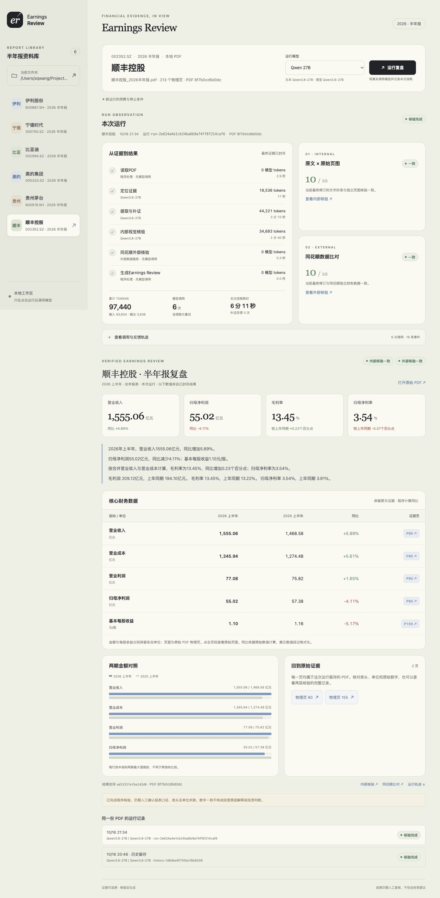

从本地 PDF 到可核验的复盘网页
用自己的 Agent，搭建 Earnings Review
从本地半年报文件夹开始，做出能运行、能核验、能追溯的财报复盘网页。
本讲不限定工具：Codex、Claude Code、Cursor、Kimi Code、ZCode、WorkBuddy、Qoder、Trae 等任意编程 Agent，或 OpenCode 搭配 DeepSeek，都可以。接下来每次复制一条 Prompt（提示词，就是你原样复制给 Agent 的一段指令文字），让自己的编程 Agent 写出一部分程序、运行检查，再由你核对结果。提示词里的技术名词不需要逐个看懂，原样复制发出去即可；你要做的只是复制、等待、再对照每步的检查点。完成后，用户只需要选公司、选模型、点运行，就能看到进度、两层核验和公司的半年报 Earnings Review。
材料包有六份完整 2026 半年报、任务书、数据约定、合成检查案例、四份通用运行时提示词和可执行的合成验收。验收代码不是成品应用，不含真实公司答案、预选页码或 API Key。
动手之前，先看程序和模型怎样配合
从完整 PDF 到 Earnings Review，程序负责读文件、执行工具、计算和检查；模型负责寻找证据与抄录。先沿着下面的箭头看一遍，再开始第 0 步搭建。
- 输入完整 PDF、公司、期间和指标定义继续 ↓
- 程序逐页提取文字，生成覆盖全报告的导航索引继续 ↓
- 文本模型 · 定位请求选择证据页，提供页码和原文锚点交给程序 ↓
- 程序检查核对定位，读取完整页，检查证据是否缺项不通过 → 补证分支通过 ↓
- 文本模型 · 抄录请求抄录两期原值、原始单位、列头和出处交给程序 ↓
- 程序检查检查数字、单位、引用与对应指标附近的原文不通过 → 补证分支通过 ↓
- 程序按原单位换算，计算同比，保存候选计算表继续核验 ↓
- 独立视觉模型＋程序新会话读取原始页图，程序比较两次抄录不通过 → 补证分支通过 ↓
- 程序＋同花顺取得独立财务数据，逐项核对五指标的两个期间不通过 → 补证分支通过 ↓
- 程序交付封存证据、计算与调用记录，更新 Earnings Review 网页，留待人工复核
图中的定位、文字抄录与独立视觉是不同的模型任务。初次定位和初次抄录各发起请求；工具往返、补证和视觉续跑会增加调用次数，全部计入本轮 tokens 与耗时。
每一步具体做什么
| 步骤 | 谁执行 | 输入、操作与输出 |
|---|---|---|
| 1．PDF 转逐页文字 | 程序 | 每份报告提取一次，保留每个物理页（按 PDF 文件顺序数第几页，封面算第 1 页，与页面上印的页码可能不一样）的完整文字和源文件指纹（用 SHA-256 哈希算法对文件内容算出的一串字符，文件改动一个字它就会变，用来确认文件没被改动），空白页也计数；后续读取同一份快照（一份固定下来、不再变化的副本，之后每次都读它）。 |
| 2．生成导航索引 | 程序 | 为每页生成包含页头、单位或指标附近文字的导航卡（每页一小段摘要，模型靠它快速判断该读哪几页，不用翻整份报告）。覆盖所有物理页号，文字有省略，不能直接作为完整财务证据。 |
| 3．定位证据页 | 文本模型 | 读取全部导航，判断哪些页包含合并利润表、续表、金额单位和 EPS 单位，返回页码与原文锚点（从原文摘出的一小段文字，程序用它核对模型说的位置真实存在）；需要时自行请求检索全文、读取指定页，由程序执行。 |
| 4．读取完整页 | 程序 | 检查页码与锚点是否真实存在，读取所选整页，检查关键线索是否缺失。不通过时记录原因并进入受预算约束的补证，不向模型补入正确页码。 |
| 5．抄录原值 | 文本模型 | 读取完整证据页，输出五项指标的两期数字、原单位、年份列头、合并口径与出处。保留括号、负号和引文，不计算。 |
| 6．检查来源 | 程序 | 检查字段、引用页、单位原句，以及完整数字是否绑定对应指标行、保留原符号与精度。不通过时保留失败；文字检查通过，也仍需后面的独立核验。 |
| 7．换算、计算 | 程序 | 用 Decimal 按原单位换算金额，EPS 保持元/股，用固定公式计算同比；上期不为正时同比不适用。原值与候选计算表分别保存，未核验结果不进入最终复盘。 |
| 8．内部视觉核验 | 独立视觉模型＋程序 | 新的视觉会话只看选定原始页图（把 PDF 某一页原样转成一张图片，让视觉模型像人一样“看”这一页）与任务，不看文字答案或同花顺参考值。重新抄录后由程序核对数值、单位和证据，保存内部核验记录。 |
| 9．外部数据核验 | 程序＋同花顺 | 取得同一公司、相同累计 H1 口径的两期数据，按 PDF 原单位与披露精度逐项比较。参考数值由程序保管，不进入模型补证反馈。 |
| 10．生成网页复盘 | 程序 | 当前版本的两层核验通过后，封存（打包保存并记下文件指纹，之后不再改动，方便日后核对）原 PDF、页图、原值、计算与核验记录，生成财务表、同比、利润率、图表与证据链接。每步模型、tokens、耗时和全部续跑留在同一用量账本（记录这一轮每次模型调用、消耗和耗时的清单）。 |
本讲已经接通内部视觉核验、同花顺比对和网页交付，这三部分与前面的取证、计算使用同一条实线流程。最终交付是 Earnings Review 网页。
网页将这些操作归到六个运行步骤：读取 PDF、定位证据、抄录与补证、内部视觉核验、同花顺外部核验、生成复盘。逐页文字与导航属于“读取 PDF”；完整读页、来源检查和初步计算主要发生在“抄录与补证”。利润率等展示指标由“生成复盘”读取已核验原值确定性计算。
先分清谁在搭建，谁在运行
你正在使用的编程 Agent
Codex、Claude Code、Cursor、Kimi Code、ZCode、WorkBuddy、Qoder、Trae 等任意一种，或 OpenCode 搭配 DeepSeek。它负责读任务、写文件、启动程序、检查和修复。这里的主 Prompt 都发给它。
做出来的财报 Agent
是你本机的一个程序。它按固定阶段运行，用工具读 PDF，调用财报模型，检查证据并更新网页。
程序调用的财报模型
主线使用 Qwen 27B 做文字抄录和独立视觉复读。它与你的编程 Agent 当前使用的编码模型是两项配置。
固定的是阶段、财务口径、检查规则和停止条件。证据页由模型借助检索和读页工具自行寻找。把程序做出来之后，日常点网页运行不需要编程 Agent 留在对话中。
同一流程在网页中的六个运行步骤
- 程序读取 PDF
检查文件身份，抽取整份逐页文本并生成导航。
- 模型＋工具定位证据
模型选择物理页，必要时检索全文、读取页面。
- 模型＋程序抄录与补证
模型保留原值和单位，程序检查来源并计算。
- 视觉模型＋程序内部核验
新会话盲读页图，程序比较两次独立抄录。
- 同花顺＋程序外部核验
取独立两期数据，按原披露精度逐项核对。
- 程序生成复盘
核验通过后封存证据，计算同比和利润率，更新网页。
做到什么程度算完成
- 公司列表来自本地真实 PDF；新增一份符合条件的报告，重新扫描就能出现。
- 点击运行后产生真实任务，六个阶段显示实际状态、模型、tokens 和耗时。
- 内部核验独立读取原始页图，外部核验与同花顺数据逐项对照。
- 检查失败时交回失败原因和已有进度；达到预算或无进展条件就停止。
- 只有当前版本的两层核验都通过，才生成带证据链接的复盘。
打开一个新项目
准备一个新项目
新建名为 earnings-review 的空文件夹。下载并解压实操材料包，把包内 earnings-review 文件夹里的内容放进这个项目。确认 reports 下面有六份 PDF，contracts 和 prompts 也在项目根目录。
让你的编程 Agent 打开这个文件夹
用你选好的编程 Agent 打开 earnings-review（OpenCode、Codex、Claude Code、Cursor、Kimi Code 等任意一种都可以）。在它的输入框中发送下面第 0 步的 Prompt。后续始终在同一个项目里操作。若它只给方案不写文件，检查是否处于允许编辑、写入文件的模式（OpenCode 里叫 Build 模式，其他工具请查各自文档）。
确认编码模型可以工作
按你所用编程 Agent 的官方文档连接好编码模型，连接后直接从第 0 步开始，不额外发送测试对话。用 OpenCode 时，CLI 的 run 方式使用 --model deepseek/deepseek-flash --variant high；交互界面按本机模型选项切到 High 推理档。若 High 出现无进展、输出上限耗尽、以 length 结束或效果不足，保留该次结果并在全新空项目中改用 Max（CLI 使用 --variant max）重跑，不把两档结果合并为同一次。编码模型和财报运行模型不是同一个配置，财报默认仍是 Qwen27B。
准备程序运行所需的服务
财报模型的服务端 API 凭据，以及同花顺金融数据服务凭据，需要单独确认。编程 Agent 能聊天写代码，不代表生成的程序能读取同一项授权。课前对照下表逐项确认；第 0 步会再检查缺什么，并给出适合你电脑的配置方法。暂无服务凭据时，可以先搭建离线模块；第 8 步真实运行前必须补齐，不能把未完成写成通过。
确认 服务 它负责什么 课前要确认 官方入口 ☐ 编程 Agent（任选其一） 读提示词、写程序、运行检查 已安装任意一种 Coding Agent。只有选择 OpenCode＋DeepSeek 方案时，才需要在 DeepSeek 开放平台注册并充值；使用其他工具不需要。 DeepSeek 开放平台（仅 OpenCode 方案需要） ↗ ☐ 硅基流动 财报模型的服务端 API Key，文字抄录与视觉复读都走这里 已注册，并在控制台创建好自己账号的 API Key。 硅基流动官网 ↗ ☐ 同花顺金融数据服务 外部核验用的独立财务数据 已注册，并取得自己账号的 API Key。 同花顺金融数据 API 入口 ↗
OpenCode 用户可参考 官方使用文档、模型配置；使用其他编程 Agent 请查阅各自官方文档。这些入口可能随版本调整；本讲不依赖某个固定快捷键。
主线按0–8发送九条主Prompt。Agent在每条任务内根据材料包公开检查自行修正并重测，通过后才返回，再发下一步。九条主提示词是设计好的完整指令，按【环境护栏】【生成纪律】【本步任务】【财务口径】【主干接线】【验收回路】【完成与停止】七层组织，照抄即可，不要自行删改；个别提到 OpenCode 特定行为的句子（例如项目外权限被自动拒绝），使用其他工具时让自己的 Agent 按等价方式理解处理。判例细节不在提示词正文展开，由材料包内的可执行公共验收强制。第8步给出本地网址后，网页和固定程序自行完成实际运行，不需要再向编程 Agent 补观察或修复说明。下方修复与扩展仅供遇到新环境问题时另做诊断，不属于“九条主线通过”的证据。 每步扩展同一个生产主干：第3步已有真实冻结进程，第5步已有来源循环，第6步走完整合成成功链，第7步通过全部生产验收，第8步完成网页和真实运行入口。
让 Agent 检查项目和运行条件
先知道自己在哪个目录、哪些服务能用。装好了编程 Agent，不等于 Python、渲染工具等其他依赖都已经准备好。
现在怎么做
- 完成上面的新建文件夹与解压操作。
- 把本步 Prompt 发给你的编程 Agent。它如需要你手动输入凭据，只在相应服务的隐藏输入处操作，完成后再告诉它“已配置，请重新检查”。
【环境护栏】先建立当前项目 runtime/step-0 和 runtime/step-0/tmp。所有日志、临时脚本、诊断输出和页图检查均留在该目录或 tests/output；Python 临时目录显式指定项目内 dir。禁止使用 /tmp、系统临时目录或其它项目，也不为诊断请求项目外权限；OpenCode CLI 在项目外权限被自动拒绝时可能直接结束本轮，不能把试探拒绝当成可恢复步骤。每步先从工具输出确认当前项目根目录：支持相对路径的命令和文件工具使用项目相对路径；要求绝对路径的写入工具，必须从刚确认的根目录原文生成，禁止重打、猜写目录名或日期；写入前确认父目录实际存在且属于本项目，无法确保时改用当前目录下的相对路径写入命令，不试探项目外写入。 【本步任务】我们要在当前 earnings-review 项目中搭建一个本地 Earnings Review 程序。请先读取 TASKBOOK.md、contracts 目录和 prompts/runtime 目录，现在只完成环境检查。本步不调用财报生成模型，不获取公司利润表，不开始写整个应用。 编码配置检查：记录正在使用的编码模型与推理档。OpenCode＋DeepSeek 方案默认使用 High 档，CLI 启动参数是 --variant high；交互界面按本机模型选项切到 High。这不是程序运行时的 Qwen27B。若 High 出现无进展、输出上限耗尽、以 length 结束或效果不足，保留这次结果，在全新空项目中再用 Max 重跑（CLI 使用 --variant max）；不把不同档位的结果合并或冒称同一次。若当前配置不同，明确记录差异，不能冒称同配置通过。 1. 报告你当前工作目录的绝对路径。确认项目根目录下有 reports、contracts、prompts/runtime。列出实际 PDF 文件名，不根据文件名猜财务数据。 2. 检查我的操作系统、可用 Python、项目虚拟环境、pypdf，以及可用的 PDF 页图渲染工具；程序要适配我的实际操作系统，不写入别人的绝对路径。同时记录 Node 实际版本与可执行路径，第 2 步需要用已有 Node 执行公开前端恢复行为检查（它只导入生产模块，不安装浏览器、DOM 模拟库或新的前端框架）。 3. 检查 hithink-finance 命令是否存在。已安装时读取 version、auth status 和 financials.income 的 schema，只报告状态，不显示凭据；不存在时先给出 Node.js 和官方 CLI 的最少准备步骤，不改装已能工作的环境。 4. 检查财报模型服务端凭据是否存在，只返回「已配置」或「未配置」。不要读取或复制 OpenCode 私有登录文件来冒充本程序授权。查找约定：优先进程 SILICONFLOW_API_KEY；否则 macOS/Linux 读取用户级 ~/.config/siliconflow/credentials.env，Windows 读取 %APPDATA%/siliconflow/credentials.env 中的同名变量；只检查非空与文件权限，不输出内容、不复制进项目。后续程序使用同一查找规则，不读取 OpenCode 登录文件。 5. 缺少凭据时，给出对应官方服务入口，以及适合我电脑的隐藏输入配置方法；凭据保存在用户级安全位置或当前进程环境，不进入项目、聊天、命令参数或日志。等我完成后再检查。 6. 保存 environment-check.json，记录操作系统、工具版本、检查结果和唯一的下一步操作；没有通过的项如实写 missing，不能写 ready。环境或凭据不足不能标成 ready，但可把「离线开发可继续」和「真实运行被阻塞」分别写清。 缺少项目虚拟环境或 pypdf 时，在当前项目创建虚拟环境并安装最少依赖，固定实际版本写入 requirements.txt；页图工具优先用已有工具。 本次只使用当前解压的材料和本项目内由你新写的代码。不要读取、复制其他项目、历史成品、作者源码或已有财报任务。先核对 MATERIALS.json 中每份 PDF、运行时提示词和 acceptance 文件哈希，读取 contracts/development-checks.json；材料哈希不符先报告，不能悄悄替换。后续步骤先依据本条主 Prompt 与 acceptance/README.md 的接口约定实现，不要求提前通读acceptance源码。 【验收回路】读取 acceptance/README.md，使用本项目 Python 运行 python -m acceptance.checks --through 0，证明父/子进程离线守卫有效；不为了离线检查查询证券身份或公司利润表。完整检查日志保留在本项目 runtime/step-0：执行验收时只将 stderr 重定向到该步日志，stdout 中的真实 JSON 结果原样回传，保留同一次检查的退出状态；不要把真实结果截断、改写成自述，或用后一次命令输出冒充本次结果。 【完成与停止】本条任务的完成条件：把实际版本和 missing/ready 状态写入 environment-check.json，确认文件存在、JSON 可读之后，运行本步公开验收；失败时在本条消息内自行读失败日志、修复并复测，直到通过后再返回并停下。不要把「实现完了」「测试命令已启动」或退出码 0 当成验收证据；保存实际结果。不读取其他项目或讲义外观察文件，不要求我再发一条修复或恢复指令；授权或环境确实缺失时明确阻塞及已完成部分。
应该看到
- 项目里出现 environment-check.json。
- Agent 清楚说明了当前项目路径、Python 与渲染工具状态，以及两项服务是否配置。
确认后再继续
- 当前目录确实是自己的 earnings-review。
- 缺失项有具体的处理方法；没有把“命令存在”写成“服务已获授权”。
- 离线检查的父进程和子进程都确实阻止出站请求。
- 写入路径来自实际项目根目录，未猜写绝对目录；项目外权限拒绝或缺少完整stop回复即本步未完成。
- 已记录实际使用的编码模型与推理档，未把财报模型配置当作编码配置。
- 已区分公开接口约定与测试体，消除后续步骤提前通读的歧义；环境检查完整日志和真实结果均保留。
本步产物 environment-check.json
本步没做好？复制修复 Prompt
第 0 步还没有完成。请重新读取 environment-check.json，逐项对照本步要求。先报告唯一阻塞项和适合我实际操作系统的下一步，能在当前项目内修复的依赖就修复并复查。不要重新安装 OpenCode，不要要求我把 API Key 粘贴到聊天，不要绕过未通过的条件。完成后更新该文件并停下。 服务端凭据查找约定：优先进程SILICONFLOW_API_KEY；否则本机macOS/Linux读取用户级~/.config/siliconflow/credentials.env，Windows读取%APPDATA%/siliconflow/credentials.env中的同名变量。只检查非空与文件权限，不输出内容、不复制进项目。用户尚未配置时给出该位置的隐藏输入方法；Unix文件限本人读写。后续程序使用同一查找规则，不读取OpenCode登录文件。 错误位于已完成的前置模块时，修复通用依赖并重跑受影响的检查，保留已经完成的开发进度；先读tests/output中的实际失败与审查记录。
建立规则与持久任务骨架
先固定规则，并写出可以重开后还在、保存时不会留下半个文件（原子保存）、每个阶段开始结束都有记录的持久任务骨架。
现在怎么做
- 确认环境问题已处理，或已明确哪些步骤会暂时停止。
- 发送下面的 Prompt，让 Agent 建立项目骨架和规则。
- 让Agent逐段扩展同一个生产主干，写入并检查当前最小层，再继续；不用额外继续消息。
【环境护栏】先建立当前项目 runtime/step-1 和 runtime/step-1/tmp。所有日志、临时脚本、诊断输出和页图检查均留在该目录或 tests/output；Python 临时目录显式指定项目内 dir。禁止使用 /tmp、系统临时目录或其它项目，也不为诊断请求项目外权限；OpenCode CLI 在项目外权限被自动拒绝时可能直接结束本轮，不能把试探拒绝当成可恢复步骤。每步先从工具输出确认当前项目根目录：支持相对路径的命令和文件工具使用项目相对路径；要求绝对路径的写入工具，必须从刚确认的根目录原文生成，禁止重打、猜写目录名或日期；写入前确认父目录实际存在且属于本项目，无法确保时改用当前目录下的相对路径写入命令，不试探项目外写入。 【生成纪律】只读本步所需的约定和已有接口，先写入当前最小生产修改并编译，再扩展下一段；不要在第一次业务写入前展开全部剩余产品设计。每次生成只完成当前一段，实际写入后再分析下一段；每段通过后在本条消息内自动继续，不等我补一条继续。 【本步任务】现在完成第 1 步。读取 TASKBOOK.md、contracts/workflow.json、contracts/observation.schema.json 和 contracts/check_examples.json，在当前项目创建 AGENTS.md、project_status.md、app、web、tests、runtime 目录以及适合本机的启动说明。选用最少的依赖：Python 后台、原生 HTML/CSS/JavaScript 前台；先不引入复杂框架、数据库、云部署或 codex exec——项目里的固定程序本身就是运行器。 AGENTS.md 要固定这些要求： - 输入是 reports 中实际存在的 A 股 2026 完整半年报，期间是 2026H1 对 2025H1，口径是合并报表。 - 五项指标为营业收入、营业成本、营业利润、归母净利润、基本每股收益；收入与营业总收入、成本与营业总成本要分清。 - 原值、原单位、列头、取值物理页、单位物理页和逐字引文先保存，后由代码计算；EPS 保持元/股。 - 固定六个阶段：prepare、locate、extract、vision、external、delivery；证据页和查询词不能写死。 - 模型只负责找证据和抄录；程序负责计算、核验、状态转换、累计用量、预算和停止。 - 内部视觉核验用新的独立会话；外部参考值由程序保管，不能交给抄录模型。 - 每次运行有独立目录；失败保留已完成证据，不覆盖此前成功结果；当前两层检查未过，review 必须为空。 - 不做分析师预期、估值、投资建议或没有证据的经营原因解释。 - 所有开发工作留在本项目；密钥不写进项目。 把下面的跟做规则写入项目 AGENTS.md：主线只有第 0–8 步九条开发消息；每条消息内运行公开检查，读取其真实失败日志，自行修复并重新检查，完成后才返回；不要求我另发修复、恢复或观察消息；不得改 acceptance、contracts 或 runtime 提示词来绕过失败；本地单测不得与公共冻结/canary 检查并行——公共检查会暂时改写并恢复工作区文件，必须等它完全结束后再做其他冻结。 把以下执行顺序原文写入AGENTS.md，并用于后续开发：每步先确认实际项目根目录。生产修改采用「小段写入→编译→检查→按失败局部读源」的顺序，在同一条消息内自动继续。第5步首次业务写入前禁止读取acceptance下测试与fixture源码；最多两次必要接口读取，工具回传正文合计不超过6000字符，只读当前生产接口、observation约定或本步runtime提示词的必要片段，已在对话中的约定不重复读取。首次写入须新增本步可执行生产行为，目录、文档、注释或纯占位不计。首次生产写入并编译、取得本步真实失败后，每轮只读首个失败涉及的一个测试定义或一个fixture helper的局部，单次以80行和4000字符为参考目标；完整定义更长时只读当前失败所需的连续片段并记录实际范围；先修生产并编译、重测，再展开下一个问题，不连续拼读整份源码。读取限制只约束开发工具回传，不限制财报原文、来源metadata链或生产绑定距离。公开最终检查与默认本地检查仍全部执行且串行，原断言和全部业务规则不变。 project_status.md 列出第 0 至第 8 步，每步记录完成证据和未解决问题。开发步骤和运行阶段分开：开发 0 环境、1 持久任务骨架、2 资料库与只读服务、3 资料工具和冻结 worker、4 模型账本接线、5 生产抄录/来源循环、6 两层核验和完整成功链、7 反馈预算及全部生产检查、8 网页验收与启动；运行只有 prepare/locate/extract/vision/external/delivery 六阶段。当前完成规则和可执行持久骨架，其余待做，不伪造完成状态。运行一个本地环境检查，给我下一步应看到的文件。 服务日志、测试输出与临时文件都放在本项目 runtime 或 tests/output 内，不把 /tmp 等项目外路径用于本步检查；端口冲突时只停本项目自己记录的进程或另选空闲端口；OpenCode 拒绝项目外路径时，改为项目内等价检查并保存拒绝原因，不能跳过验收或放宽全局权限。浏览器交互检查使用当前 Agent 已经获准使用的浏览器工具；没有此类工具时，完成 HTTP/API 与离线测试后启动服务，给出网址和明确的人工检查步骤，把浏览器交互标为待实际检查并停下；不要另外启动 Chrome 远程调试、CDP 或安装浏览器自动化栈——网页是否真的可用，以实际浏览器操作为证。 【主干接线】先按 acceptance/README.md 建立生产边界，不另造测试编排：acceptance 是只读公共测试，现有 validate/dispatch/compare/progress/run 均转发生产代码，app/acceptance.py 仅适配生产模块，不能另写测试专用运行器；第 3 步实现 serve(scenario, output_root) 上下文，返回 base_url，启动正常入口使用的真实 server、TaskManager 和冻结 worker。服务端正常启动与合成验收共用同一个 server 工厂，project_root/runtime_root 是显式参数，不把作者路径或全局 runtime 固定进模块。默认测试必须离线，联网测试单列并显式启用。 本步不能只写规则。先建立生产 app/contracts.py 读取公共规则，以及 app/task_manager.py 及 app/task_runner.py 骨架：TaskManager 拥有任务目录、原子 JSON 写入、历史只读和阶段日志；同一个 TaskRunner 以后逐步扩展，不另造开发运行器。先实现可执行的持久状态与 StageJournal，再做本地检查；缺的未来能力明确未实现，不产生假成功。状态至少预留 task_id/status/current_stage、六项 stages、usage、current、review、evidence；current 初始无通过，review 为空。在 app/workflow.py 建立当前证明失效和计数容器，供第 5/6 步沿用，第 7 步再扩展终身进度和反馈策略。建立 app/acceptance.py 的 create_subject(project_root)，未完成方法延迟导入各生产模块，不在导入时触发服务。 持久 stage-journal.json 的 events 每条含递增 sequence、stage、kind=start/end、Unix 秒 at，end 有 outcome；prepare/locate/extract/vision/external/delivery 每次进入都先落 start 再工作，阶段结束、失败、中断及重启恢复均配对落 end；同阶段重入保留独立区间；终态所有已开始区间闭合，后来刷新不再增长耗时。引用这个真实日志与 ledger 生成 API/网页投影，不能从最后一个模型回执猜程序阶段，也不能只在内存启动计时；run 结果额外返回真实 journal_file 并封存它。 本地检查实际创建、重开任务状态，配对记录阶段 start/end，模拟原子替换失败后原文件仍可读；不能只断言字典常量。记录真实文件作为本步证据。把每步项目内临时路径约束和 acceptance.local_checks 统一入口写进 AGENTS.md 与 README 的默认测试命令，后续沿用。 【验收回路】先用本项目 Python 执行 python -m acceptance.checks --through 1，待其完全结束，再执行默认本地测试 python -m acceptance.local_checks --output runtime/step-1/local-checks，二者严格串行。acceptance.local_checks 会在发现或导入任何测试/应用之前安装公开离线守卫，并把默认临时目录设在项目内；先创建 tests/__init__.py，不能只依赖 tests/__init__.py 的导入副作用，也不用裸 python -m unittest discover -s tests 来声称默认检查受保护。完整检查日志保留在本项目 runtime/step-1，不把全量日志展开到对话：执行验收时只将 stderr 重定向到该步日志，stdout 中的真实 JSON 结果原样回传，保留同一次检查的退出状态；失败再按用例名和行号读取首个相关片段。不要把真实结果截断、改写成自述，或用后一次命令输出冒充本次结果；本地检查同样保存完整日志并回传实际结果，日志与测试输出仍全部可审查。不要为排查测试另起项目外日志。 【完成与停止】本条任务的完成条件：先运行本步公开验收与相邻本地检查，失败时在本条消息内自行读失败日志、修改生产代码并复测，直到通过后再返回并停下。不要把「实现完了」「测试命令已启动」或退出码 0 当成验收证据；保存实际结果，把完成证据与未解决问题写入 project_status.md。不读取其他项目或讲义外观察文件，不改公开断言，不要求我再发一条修复或恢复指令；授权或环境确实缺失时明确阻塞及已完成部分。
应该看到
- Agent 已创建项目规则与进度文件，保留已有 PDF、规则约定文件和提示词。
- 目录中有 app、web、tests、runtime，仍没有财报分析结果。
- 真实重开持久状态、原子写入失败保留原值、阶段日志配对的本地检查已保存。
确认后再继续
- AGENTS.md 写清了编码 Agent 与运行程序的分工。
- 第 2 至第 8 步仍标为待做；没有伪造样本结果。
- 真实重开持久状态、原子写入失败保留原值、阶段日志配对的本地检查已保存。
- 写入路径来自实际项目根目录，未猜写绝对目录；项目外权限拒绝或缺少完整stop回复即本步未完成。
- 已明确先实现再按失败局部读测试；AGENTS与主提示词顺序一致，完整日志和真实结果均保留。
本步产物 AGENTS.md · project_status.md · app/ · web/ · tests/ · runtime/ · app/task_manager.py · app/task_runner.py · app/acceptance.py · app/contracts.py · app/workflow.py
本步没做好？复制修复 Prompt
请只修复第 1 步。核对 TASKBOOK.md 和 contracts，把缺少的规则补进 AGENTS.md，检查项目目录确实存在。删除本步误写的“已通过核验”状态或示例成稿标记，保留原材料。运行检查后把真实证据记入 project_status.md，停在第 1 步。 服务日志、测试输出与临时文件都放在本项目runtime或tests/output内，不把/tmp等项目外路径用于本步检查。端口冲突时只停本项目自己记录的进程或另选空闲端口。OpenCode拒绝项目外路径时，改为项目内等价检查并保存拒绝原因，不能跳过验收或放宽全局权限。 浏览器交互检查使用当前Agent已经获准使用的浏览器工具。没有此类工具时，完成HTTP/API与离线测试后启动服务，给出网址和明确的人工检查步骤，把浏览器交互标为待实际检查并停下。不要另外启动Chrome远程调试、CDP或安装浏览器自动化栈。网页是否真的可用，以实际浏览器操作为证。 错误位于已完成的前置模块时，修复通用依赖并重跑受影响的检查，保留已经完成的开发进度；先读tests/output中的实际失败与审查记录。
先看到真实资料库和一个空页面
先看到真实资料库、空页面和可读取同一持久状态的本地服务。
现在怎么做
- 发送本步 Prompt。
- 打开 Agent 返回的本地网址（通常是 127.0.0.1 开头的地址，表示程序只监听本机，只有你这台电脑能打开），依次选择两家公司。
- 让Agent逐段扩展同一个生产主干，写入并检查当前最小层，再继续；不用额外继续消息。
【环境护栏】先建立当前项目 runtime/step-2 和 runtime/step-2/tmp。所有日志、临时脚本、诊断输出和页图检查均留在该目录或 tests/output；Python 临时目录显式指定项目内 dir。禁止使用 /tmp、系统临时目录或其它项目，也不为诊断请求项目外权限；OpenCode CLI 在项目外权限被自动拒绝时可能直接结束本轮，不能把试探拒绝当成可恢复步骤。每步先从工具输出确认当前项目根目录：支持相对路径的命令和文件工具使用项目相对路径；要求绝对路径的写入工具，必须从刚确认的根目录原文生成，禁止重打、猜写目录名或日期；写入前确认父目录实际存在且属于本项目，无法确保时改用当前目录下的相对路径写入命令，不试探项目外写入。
【生成纪律】只读本步所需的约定和已有接口，先写入当前最小生产修改并编译，再扩展下一段；不要在第一次业务写入前展开全部剩余产品设计。每次生成只完成当前一段，实际写入后再分析下一段；每段通过后在本条消息内自动继续，不等我补一条继续。
【本步任务】现在完成第 2 步。请实际编写 app/catalog.py、app/server.py 和 web/index.html、web/style.css、web/app.js。
资料库从配置的本地文件夹扫描 PDF：读取封面和前部身份信息，确认完整公司名、2026 半年报和唯一 A 股代码；证券身份用 hithink-finance symbol search 的唯一真实匹配确认并保存响应，检索时保留空白，防止 A 股与 H 股代码粘成一串。摘要、加密或身份不明确的文件列出排除原因；空文件夹合法。同花顺身份服务未就绪时，可以先显示从 PDF 识别的候选与「身份待确认」状态，但禁止创建正式运行，不能把候选冒充已核验身份。每份报告记录文件名、页数、SHA-256 和身份；重新扫描后按真实文件生成公司列表，不预写六家公司选项。扫描可以调用证券身份服务，但不调用财报模型。身份查询只在用户明确扫描资料库时执行；目录模块导入、默认测试和网页轮询均不能触发真实身份查询；为离线检查注入合成身份传输——write=False 或不保存文件不等于禁止联网。无授权时保留候选，真实运行按钮保持禁用。
网页先有公司资料库、当前公司、报告文件名、模型选择、运行按钮、六个阶段、两层核验区和空的复盘区。运行按钮此时明确显示「尚未接通」，不能产生假进度或假数值；所有检查初始为未开始。颜色用米白 #eff0e4、纸白 #fafaf2、深灰 #202328、雾蓝 #7899c4、珊瑚红 #bb5b4e、鼠尾草绿 #668f6c；不加载外部字体或脚本。本地服务只监听 127.0.0.1；提供填写文件夹路径的入口，原生选择器可后做；切换公司立即清空上家公司的运行与结果。先不填写财务数字。
375/320 宽度使用单列或适当换行，不能靠整页横向滚动藏溢出；阶段名称保持可读的横向文字，长模型名、tokens 和耗时在它下方换行。预检文案只说明预检证明了什么，实际生成、失败或通过以任务记录为准，避免完成后仍固定显示「未做推理」。具体 CSS 实现由公开静态资源检查验收。
现在固定网页与后台的共同接口，前台代码按它接线，不猜字段：GET /api/catalog 返回 entries，每项含 id、company、thscode、filename、pages、pdf_sha256；第 3 步前 POST /api/tasks 明确返回尚未接通，之后后台创建接入、网页按钮至第 7 步仍禁用；第 3 步接入后，POST /api/tasks 接收 report_id、preset_id、idempotency_key 和 expected_source_sha256，202 返回 task_id；GET /api/tasks/{id} 读取同一个任务，GET /api/history 返回 tasks 数组，各项含 task_id；GET 不能创建任务或调用服务。变更请求必须 application/json 且 Origin 与本机服务同源。证据只能通过允许的任务 artifact 路由读取，不能把本地绝对路径当链接或开放任意文件。服务端保管密钥，仅监听本机；只开放允许的任务和证据路由，验证变更请求，不能让网页任意读取本地文件。
GET /api/tasks/{id} 投影含 task_id/status/current_stage、六项 stages、usage、current、review 和 evidence。stages 每项有 name/status/model/requests/model_tokens/pending/unknown/elapsed_seconds，顺序固定；未开始 pending、当前 running、完成 done、受阻 stopped 或 interrupted。usage 含 requests、total_tokens、pending、unknown，known 小计不因 pending 消失。模型阶段从真实 ledger 累计，prepare/external/delivery 为 0 模型 tokens。current 沿用真实当前候选两层证明；review 来自生产 metrics，不在 server 或 adapter 再算一份。状态 API 和网页从同一当前任务投影读取：终态失败显示最后一次动作/来源/核验错误，不用历史最好规则替代；清除「未做推理」「全部未开始」等过期字样；当前失败与历史成功分开，此前成功结果只能在标明历史的独立区域查看。失败时显示当前失败原因和已保存证据。
服务重启和刷新从持久 task/ledger/journal/proof 恢复同一任务与 history；GET 和历史打开只读，不要求凭据再次可用，不追加生成请求；选择新公司立即清旧 view，晚到轮询按公司和 task_id 丢弃；网页不把旧成功装成本轮通过。
前端刷新恢复不能只在文字上承诺。新增网页实际使用的 web/task-view.mjs，导出 createTaskView({getJSON, storage, present})，返回 restore()/select(reportId)/refresh() 三个异步操作，具体公开输入输出见 acceptance/README.md 和 recovery_checks.py。只集中恢复、选择、身份与晚到响应控制，不复制后台状态机或财务格式化。页面初始化实际调用 restore，公司切换调用 select，已有轮询调用 refresh。先发布 loading 且运行不可用，再从 catalog/history/task GET 恢复；恢复失败显示 error，不能提前写无记录。浏览器存储仅为选中报告/任务的提示，任务事实来自持久服务。以报告 id+源 PDF SHA 绑定，名称只展示；活动任务优先，否则显示最近已有终态及其真实冻结 preset。任务/历史 GET 都返回冻结的 report_id、source_sha256、preset_id、created_at，不能用当前 catalog 覆盖旧身份。无有效选择提示时只可恢复唯一合法活动任务；同名、改哈希、缺身份、过期响应不能串结果。恢复和历史只 GET，不创建或重跑。保留原 POST 幂等意图，不把超时不确定发送结果变成新键重发。生产模块本身由 Node 执行新公开 test_02_frontend_restoration，不能用独立测试算法或静态字符串代替。
本步同时写出前端任务渲染和轮询函数：以公司+task_id 过滤晚到响应，历史打开只读，已知 tokens 与 pending/unknown 并列。用本地合成持久记录检查只读投影和安全路由，不伪造任何真实公司运行。
启动服务并告诉我实际网址。检查空目录、无效路径、两家公司切换，确认不会出现另一家公司数据；把检查记录写进 project_status.md。浏览器交互检查使用当前 Agent 已经获准使用的浏览器工具；没有此类工具时，完成 HTTP/API 与离线测试后启动服务，给出网址和明确的人工检查步骤，把浏览器交互标为待实际检查并停下；不要另外启动 Chrome 远程调试、CDP 或安装浏览器自动化栈——网页是否真的可用，以实际浏览器操作为证。
【主干接线】沿用第 1 步持久状态，建立正常启动与验收共用的生产 server 工厂，project_root/runtime_root 显式传入；实现任务/历史/允许证据的只读路由和同一投影函数。空历史、404 和真实空复盘都要可用，GET 不要求服务凭据，不创建任务。为已有持久 journal、ledger 和 proof 建立投影；以后只填入实际记录，不在 server 另算财务结果。
【验收回路】先完成可渲染的最小页面，JavaScript 在 DOM 就绪后启动；启动后真实 HTTP 检查 HTML、脚本、样式和资料库接口，运行项目 Node 对脚本做语法检查。先用本项目 Python 执行 python -m acceptance.checks --through 2，待其完全结束，再执行默认本地测试 python -m acceptance.local_checks --output runtime/step-2/local-checks，二者严格串行。acceptance.local_checks 会在发现或导入任何测试/应用之前安装公开离线守卫，并把默认临时目录设在项目内；先创建 tests/__init__.py，不能只依赖 tests/__init__.py 的导入副作用，也不用裸 python -m unittest discover -s tests 来声称默认检查受保护。完整检查日志保留在本项目 runtime/step-2，不把全量日志展开到对话：执行验收时只将 stderr 重定向到该步日志，stdout 中的真实 JSON 结果原样回传，保留同一次检查的退出状态；失败再按用例名和行号读取首个相关片段。不要把真实结果截断、改写成自述，或用后一次命令输出冒充本次结果；本地检查同样保存完整日志并回传实际结果，日志与测试输出仍全部可审查。不要为排查测试另起项目外日志。
【完成与停止】本条任务的完成条件：先运行本步公开验收与相邻本地检查，失败时在本条消息内自行读失败日志、修改生产代码并复测，直到通过后再返回并停下。不要把「实现完了」「测试命令已启动」或退出码 0 当成验收证据；保存实际结果，把完成证据与未解决问题写入 project_status.md。不读取其他项目或讲义外观察文件，不改公开断言，不要求我再发一条修复或恢复指令；授权或环境确实缺失时明确阻塞及已完成部分。应该看到
- 浏览器出现与实物 PDF 对应的公司或待确认候选；没有服务授权时，未确认状态清楚可见。
- 点击不同公司，名称、代码、文件与页数一起变化。
- 复盘区为空，六个阶段及两层核验都没有假绿灯。
确认后再继续
- 切换公司后没有保留上一家公司的财务数字。
- 输入不存在的目录时保留原目录，并说明错误。
- 尚未接通的运行按钮不会消耗模型 tokens。
- 默认测试没有真实证券身份请求。
- 生产恢复模块经Node检查真实恢复/身份/竞态；网页实际绑定同一模块，刷新不产生新任务（重复同一操作结果不变，这叫幂等）。
- 写入路径来自实际项目根目录，未猜写绝对目录；项目外权限拒绝或缺少完整stop回复即本步未完成。
本步产物 app/catalog.py · app/server.py · web/index.html · web/style.css · web/app.js · web/task-view.mjs
本步没做好？复制修复 Prompt
第 2 步页面还不符合要求。请读取浏览器错误和服务日志，优先修复启动、目录扫描和公司切换。用实际 PDF 验证名称、代码、页数与哈希，不用硬编码列表绕过。财务区继续留空，不能用写死的数字或计时器动画补齐。修好后重新启动，给我实际网址和三个检查结果，然后停下。 浏览器交互检查使用当前Agent已经获准使用的浏览器工具。没有此类工具时，完成HTTP/API与离线测试后启动服务，给出网址和明确的人工检查步骤，把浏览器交互标为待实际检查并停下。不要另外启动Chrome远程调试、CDP或安装浏览器自动化栈。网页是否真的可用，以实际浏览器操作为证。 如果tests/output/browser-observation.json存在，先读取其中实际网址、可见错误和用户操作，把它作为未通过证据。修复页面真实报错后重启必要服务，继续保持财务区为空；没有实际浏览器结果时不要自行把浏览器检查改为通过。 错误位于已完成的前置模块时，修复通用依赖并重跑受影响的检查，保留已经完成的开发进度；先读tests/output中的实际失败与审查记录。
读取整份PDF，并建立冻结执行基础
完整读取PDF，并让真实子进程校验和使用本轮冻结的程序与PDF。
现在怎么做
- 发送本步 Prompt。
- 按 Agent 给出的检查方法，查看一份逐页文本文件和一张渲染图片。
- 让Agent逐段扩展同一个生产主干，写入并检查当前最小层，再继续；不用额外继续消息。
【环境护栏】先建立当前项目 runtime/step-3 和 runtime/step-3/tmp。所有日志、临时脚本、诊断输出和页图检查均留在该目录或 tests/output；Python 临时目录显式指定项目内 dir。禁止使用 /tmp、系统临时目录或其它项目，也不为诊断请求项目外权限；OpenCode CLI 在项目外权限被自动拒绝时可能直接结束本轮，不能把试探拒绝当成可恢复步骤。每步先从工具输出确认当前项目根目录：支持相对路径的命令和文件工具使用项目相对路径；要求绝对路径的写入工具，必须从刚确认的根目录原文生成，禁止重打、猜写目录名或日期；写入前确认父目录实际存在且属于本项目，无法确保时改用当前目录下的相对路径写入命令，不试探项目外写入。
【生成纪律】只读本步所需的约定和已有接口，先写入当前最小生产修改并编译，再扩展下一段；不要在第一次业务写入前展开全部剩余产品设计。每次生成只完成当前一段，实际写入后再分析下一段；每段通过后在本条消息内自动继续，不等我补一条继续。
【本步任务】现在完成第 3 步，编写 app/pdf_tools.py。实现资料工具和冻结执行基础，不调用真实财报模型。
为每份实际 PDF 建立：
1. 原文件快照与 SHA-256。
2. pages.json，每页有 physical_page 和 text；物理第 1 页从封面开始，空白页也保留；不要把 PDF 印刷页码当数组下标。
3. 每个物理页都有的导航卡，包含短摘录、保留位置和省略量；导航是有损索引，不能当完整财务证据。
4. search_fulltext(query, offset)：在整份真实文本中检索字面字符串，返回有限数量的真实页码与上下文；不是只搜目录或预选财务章节。
5. read_pages(pages)：返回指定物理页的完整文本；超过大小限制时报错，不能静默截断。
6. render_pages(pages)：从同一份快照 PDF 渲染真实完整页图，保留表头、单位和所有列，记录图片哈希；优先使用已可用的渲染工具，给 Windows 与本机路径正确的调用方式。
用程序抽查封面、一个中间页和最后一页，验证页数、页码映射和源哈希；搜索词由检查程序自行选取文档中实际存在的一小段，不预设答案页；原生文本不足时明确停止并说明当前未做 OCR。报告所有工具的输入、输出文件与实际检查结果，记入 project_status.md。
资料库确认身份时的 pdf_sha256 须一路传到任务创建：创建时先校验扫描哈希，再复制本轮 PDF 并重新计算副本哈希；与扫描身份或源哈希不符即拒绝启动并要求重扫——只比较扫描时哈希或复制前哈希，不能闭合文件在扫描后或复制期间变化的窗口。快照校验失败必须发生在任何模型请求之前。
创建任务前，先检查所选 PDF 的证券身份、财报模型服务端配置与同花顺认证已就绪；缺失时说明原因，禁止正式创建。点击运行才创建新任务并调用财报模型。一次只允许一个活动任务；同一次启动意图用同一个幂等键，重复点击或网络不确定时的重试返回同一个任务；终态后新的显式运行使用新键，不能按公司与模型永远复用旧任务；刷新页面只读状态。每个任务复制源 PDF、记录哈希、冻结实际模型配置和本轮程序；运行期间不允许换模型或修改该快照。后台任务与 HTTP 请求分离；按我的操作系统实现进程锁与持久状态，不把 Unix 专用代码直接复制到 Windows。并发创建的正确性（同键返回同一 task_id、异键活动冲突、源哈希变化拒绝）由公共验收的可执行用例强制，不再逐条列出锁内操作序列。
创建任务先在临时目录复制允许的 app 源码、web、contracts、prompts、依赖锁定/版本清单、非敏感配置和所选 PDF，逐文件校验后原子发布；拒绝路径穿越、软链接，排除 .env、密钥、.git、缓存、runtime 和其他报告；仅存代码摘要不算冻结。新 Python 子进程从本轮 program 目录执行冻结入口，所有 app 模块、提示词与配置都从该目录读取，不导入可变工作区的 app；记录实际入口路径/hash、PID 和模块实际路径。交付 ZIP 含实际程序、manifest 与证据；凭据从用户级位置运行时读取，不复制；已导入过工作区模块也不能绕过冻结；校验发现快照被改则在任何模型调用前停止。
【主干接线】本步同时把资料工具接入真实冻结执行主干，不把 TaskManager 和 worker 全部留到第 8 步：扩展第 1 步同一个 TaskManager，实际编写 app/worker.py 冻结入口；先实现允许清单复制/校验/原子发布，再写新子进程启动与等待/中断收尾，逐段编译和检查。任务在 runtime_root/tasks/{task_id}；新子进程从本轮 program 目录运行同一 TaskRunner，先校验全部冻结源码和所选 PDF，再进入 prepare，用本步真实 PDF 工具保存原 PDF、逐页文字和导航，记录 PID、入口与实际 app 模块路径。尚未实现的 locate 边界诚实停止并关闭已进入阶段——这是当前生产代码尚未完成，不增加绕过阶段的测试模式，第 5 步接上后不再保留占位停止。合成依赖由公共适配器注入已确认身份、PDF 和回环端点；真实凭据和模型配置第 4 步接入；普通网页不能提交这些测试参数，正式运行仍须真实就绪。现在实现 app.acceptance.run/serve 并延迟导入尚未完成的校验模块；二者调用正常生产 TaskManager/server/worker，不替换 _spawn。完成 app.acceptance.serve(scenario, output_root) 上下文：只调用正常入口也用的生产 server 工厂，绑定 127.0.0.1 空闲端口并 yield {'base_url': 实际网址}；合成身份、PDF 目录和回环 model/reference 端点是显式依赖，不能有另一套编排；该测试 runtime 位于 output_root，真实任务位于 output_root/tasks/{id}；退出只关闭本次测试拥有的 server/worker；普通真实服务不接受浏览器传入模型端点或 synthetic 模式。
【验收回路】本步公开 --through 3 包含冻结源码损坏、已复制 PDF 损坏、扫描后 PDF 变化三项永久反例，都由真实生产入口拒绝，不能因为未来 Runner 尚未完成而碰巧失败；另做本地正常 prepare 子进程检查，证明真正读到了冻结 PDF、PID 与模块路径。后续累计检查只断言已完成前缀和安全条件，不把未来阶段尚不存在写成永久断言。先用本项目 Python 执行 python -m acceptance.checks --through 3，待其完全结束，再执行默认本地测试 python -m acceptance.local_checks --output runtime/step-3/local-checks，二者严格串行。acceptance.local_checks 会在发现或导入任何测试/应用之前安装公开离线守卫，并把默认临时目录设在项目内；先创建 tests/__init__.py，不能只依赖 tests/__init__.py 的导入副作用，也不用裸 python -m unittest discover -s tests 来声称默认检查受保护。完整检查日志保留在本项目 runtime/step-3，不把全量日志展开到对话：执行验收时只将 stderr 重定向到该步日志，stdout 中的真实 JSON 结果原样回传，保留同一次检查的退出状态；失败再按用例名和行号读取首个相关片段。不要把真实结果截断、改写成自述，或用后一次命令输出冒充本次结果；本地检查同样保存完整日志并回传实际结果，日志与测试输出仍全部可审查。不要为排查测试另起项目外日志。
【完成与停止】本条任务的完成条件：先运行本步公开验收与相邻本地检查，失败时在本条消息内自行读失败日志、修改生产代码并复测，直到通过后再返回并停下。不要把「实现完了」「测试命令已启动」或退出码 0 当成验收证据；保存实际结果，把完成证据与未解决问题写入 project_status.md。不读取其他项目或讲义外观察文件，不改公开断言，不要求我再发一条修复或恢复指令；授权或环境确实缺失时明确阻塞及已完成部分。应该看到
- 出现覆盖整份报告的 pages.json 和导航。
- 能检索全文、按物理页读取完整文字、渲染同一原 PDF 的页图。
- 公开冻结源码损坏、复制PDF损坏、扫描后漂移三项反例在任何模型请求前停止；正常prepare确实运行于冻结子进程。
确认后再继续
- 空白页没有被删除，封面是物理第 1 页。
- 返回的检索片段确实能在对应页中找到。
- 图片来自源 PDF，不是根据文字生成的截图。
- 公开冻结源码损坏、复制PDF损坏、扫描后漂移三项反例在任何模型请求前停止；正常prepare确实运行于冻结子进程。
- 写入路径来自实际项目根目录，未猜写绝对目录；项目外权限拒绝或缺少完整stop回复即本步未完成。
本步产物 app/pdf_tools.py · runtime/.../pages.json · runtime/.../navigation.json · runtime/.../images/ · app/worker.py · runtime/.../freeze-manifest.json · runtime/.../execution.json
本步没做好？复制修复 Prompt
请修复第 3 步资料工具。逐项核对实际 PDF 页数、pages.json 数组顺序和 physical_page，保留空白页。确认检索覆盖全文，read_pages 返回完整页，render_pages 使用同一源 PDF。不要补写无法抽取的原文，不要换成预选页。给出真实抽查结果；不支持的扫描件明确列为未支持。完成后停下。 错误位于已完成的前置模块时，修复通用依赖并重跑受影响的检查，保留已经完成的开发进度；先读tests/output中的实际失败与审查记录。
接通模型配置和同一任务账本
同一冻结任务使用服务端模型配置和持久用量账本，已知、在途（pending，请求已发出、还没收到回复）与未知（unknown，中途断开、这次用量拿不回来）分别可见。
现在怎么做
- 发送本步 Prompt。
- 检查页面的模型名称与服务端配置一致，凭据只显示存在状态。
- 让Agent逐段扩展同一个生产主干，写入并检查当前最小层，再继续；不用额外继续消息。
【环境护栏】先建立当前项目 runtime/step-4 和 runtime/step-4/tmp。所有日志、临时脚本、诊断输出和页图检查均留在该目录或 tests/output；Python 临时目录显式指定项目内 dir。禁止使用 /tmp、系统临时目录或其它项目，也不为诊断请求项目外权限；OpenCode CLI 在项目外权限被自动拒绝时可能直接结束本轮，不能把试探拒绝当成可恢复步骤。每步先从工具输出确认当前项目根目录：支持相对路径的命令和文件工具使用项目相对路径；要求绝对路径的写入工具，必须从刚确认的根目录原文生成，禁止重打、猜写目录名或日期；写入前确认父目录实际存在且属于本项目，无法确保时改用当前目录下的相对路径写入命令，不试探项目外写入。 【生成纪律】只读本步所需的约定和已有接口，先写入当前最小生产修改并编译，再扩展下一段；不要在第一次业务写入前展开全部剩余产品设计。每次生成只完成当前一段，实际写入后再分析下一段；每段通过后在本条消息内自动继续，不等我补一条继续。 【本步任务】现在完成第 4 步，编写 app/model_client.py 和非敏感模型配置，接到现有后台。读取 contracts/workflow.json 中的预设：默认 qwen27 文本和视觉都为 Qwen/Qwen3.8-27B；对比 qwen9 文本为 Qwen/Qwen3.5-9B、视觉仍为 Qwen/Qwen3.8-27B——页面必须明确显示这个混合组合，不能写成「全部 9B」。 通过服务端读取我已配置的 SILICONFLOW_API_KEY，使用 https://api.siliconflow.cn/v1；不要把密钥发给浏览器。可调用模型列表接口核对账号可见的实际 ID；这只能证明列表与授权检查，不代表已完成推理或视觉测试；ID 不可用就明确报错，不自动偷换模型。编写支持文本和图像消息的服务端调用函数，但本步不发送生成请求；参数按服务商当前文档，记录 model、采样设置与请求时间：enable_thinking=false，temperature=0，top_p=0.95，max_tokens=8192，stream=false。模型与外部数据传输边界可注入合成服务；生产与验收共用同一编排。默认测试先安装 acceptance 离线守卫，子工作进程继承；模型列表检查另列为显式联网预检。 模型原始 usage 必须包含 prompt_tokens、completion_tokens、total_tokens，且都是非负整数、total 等于前两项之和；缓存 tokens 已包含在 prompt 内且不超过 prompt，不另加。缺失、负数、非整数或矛盾回执保存原样并标 unknown，停止后续准入；不能补零、截断小数或推算成已知收费量。每次未来调用先写 request 与 reserved 回执，返回后保存原始 response、usage、耗时、状态和文件哈希；所有续跑、失败和保留上下文都累计；请求和响应文件不得带认证头。进行中的缺用量显示 pending；请求结束仍无 usage 显示 unknown 并禁止后续请求；未知不能显示成 0；程序与外部数据服务阶段显示 0 模型 tokens。后台状态、API 和网页都从同一持久账本投影，不能等函数返回才看见请求：某阶段已有 110 个已知 tokens、另一调用 pending 时，同时显示 110 与 pending=1，不能把 110 隐藏成「待返回」；unknown 也与已知小计并列。所有请求中断后，先确认工作进程已停止，再把每条未完成 reserved/pending 回执转 unknown；终态 pending 必须为 0，既有已知用量仍保留；不要只改顶层 unknown 标志而让明细永远 pending。未知终态用量是停止条件，不能改成 0。 用不联网的合成回执检查加总、pending 和 unknown；实际用回环延迟传输做本地检查：一个已知回执和另一在途请求同时可见，中断先确认 worker 结束，再逐项转 unknown 并闭合阶段。页面初始加载、切换公司及切换模型均不触发财报调用。只用本项目内合成服务，不发送真实生成；已保存的真实模型列表预检与离线用量检查分开。 前端每秒读取真实状态，不用倒计时伪造进度；显示 prepare/locate/extract/vision/external/delivery、每步实际模型、模型调用数、已知 tokens、耗时及 pending/unknown；程序和同花顺阶段为 0 模型 tokens；所有补证累计在本轮账本；中断后保留记录，不自动重新发起请求；失败修订不得残留旧核验绿灯。 模型角色由实际阶段在唯一客户端/分派边界强制决定：locate、extract 及其文字续跑使用冻结 text_model，vision 及其全部视觉续跑使用冻结 vision_model；不要依赖默认 role=text，也不能只把 vision 写在日志里而发送 text_model。qwen9 的真实请求 payload 应是 9B 文字、27B 视觉；qwen27 两者同为 27B。本地合成检查核对实际已发送并持久化的 request.model 与冻结配置，不只检查预设字典或界面标签。 读取本项目公开验收和自己刚产生的测试输出；开发完成、预检就绪和真实推理结果分别记录，不依赖讲义之外的观察文件。 【主干接线】把本步客户端、服务端配置与账本接到已存在的冻结 worker 和 TaskManager 投影，所有请求文件位于同一任务，不能到第 8 步另接一套客户端。沿用第 1 步 StageJournal：进入模型阶段先持久 start 再准入与发送；prepare 结束须早于首个 locate 请求；程序与外部数据阶段不产生模型 tokens。 【验收回路】先用本项目 Python 执行 python -m acceptance.checks --through 4，待其完全结束，再执行默认本地测试 python -m acceptance.local_checks --output runtime/step-4/local-checks，二者严格串行。acceptance.local_checks 会在发现或导入任何测试/应用之前安装公开离线守卫，并把默认临时目录设在项目内；先创建 tests/__init__.py，不能只依赖 tests/__init__.py 的导入副作用，也不用裸 python -m unittest discover -s tests 来声称默认检查受保护。完整检查日志保留在本项目 runtime/step-4，不把全量日志展开到对话：执行验收时只将 stderr 重定向到该步日志，stdout 中的真实 JSON 结果原样回传，保留同一次检查的退出状态；失败再按用例名和行号读取首个相关片段。不要把真实结果截断、改写成自述，或用后一次命令输出冒充本次结果；本地检查同样保存完整日志并回传实际结果，日志与测试输出仍全部可审查。不要为排查测试另起项目外日志。 【完成与停止】本条任务的完成条件：先运行本步公开验收与相邻本地检查，失败时在本条消息内自行读失败日志、修改生产代码并复测，直到通过后再返回并停下。不要把「实现完了」「测试命令已启动」或退出码 0 当成验收证据；保存实际结果，把完成证据与未解决问题写入 project_status.md。不读取其他项目或讲义外观察文件，不改公开断言，不要求我再发一条修复或恢复指令；授权或环境确实缺失时明确阻塞及已完成部分。
应该看到
- 配置里有清楚的文本与视觉模型 ID。
- 账本能区分已知用量、待返回、未知。
- 本步没有真实财报生成调用。
- 同一持久账本的已知小计、在途与中断unknown可从生产投影读取。
确认后再继续
- 9B 选项同时说明视觉仍用 27B。
- 浏览器页面、网络响应和日志中都没有 API Key。
- 两条合成回执（模型服务返回的用量收据，记录一次调用实际消耗的 tokens）的 tokens 相加，没有把缓存再加一次。
- 同一持久账本的已知小计、在途与中断unknown可从生产投影读取。
- 写入路径来自实际项目根目录，未猜写绝对目录；项目外权限拒绝或缺少完整stop回复即本步未完成。
- 实际请求model按阶段强制选冻结的文字/视觉模型，混合预设不受默认text角色影响。
本步产物 app/model_client.py · config/models.json · tests/test_usage.py · runtime/.../ledger.json
本步没做好？复制修复 Prompt
第 4 步未通过。请检查服务端模型配置、浏览器收到的字段，以及用量累计代码。保留 provider 返回的原始 usage，修复 pending、unknown 和缓存重复累计问题。若认证失败，只报告凭据状态与安全配置方法，不显示 Key；若模型 ID 不存在，保留失败，不换名冒充。只做本地账本检查，不自动发生成请求，修好后停下。 文件操作以实测当前项目目录为根，普通操作使用app/model_client.py等相对路径。工具必须使用绝对路径时，由当前真实目录机械拼接，不手工重抄或猜测长目录名。写入被拒绝时先核对请求路径与实际工作目录，不能新建名字相似的项目外目录或放宽全局权限。 错误位于已完成的前置模块时，修复通用依赖并重跑受影响的检查，保留已经完成的开发进度；先读tests/output中的实际失败与审查记录。
把定位、抄录与来源检查接进运行器
真实冻结运行器完成定位、工具动作、抄录与来源检查，保留每次候选。
现在怎么做
- 发送本步 Prompt。
- 检查 Agent 读取了定位与文字抄录提示词，并做了离线检查。
- 让Agent逐段扩展同一个生产主干，写入并检查当前最小层，再继续；不用额外继续消息。
【环境护栏】先建立当前项目 runtime/step-5 和 runtime/step-5/tmp。所有日志、临时脚本、诊断输出和页图检查均留在该目录或 tests/output；Python 临时目录显式指定项目内 dir。禁止使用 /tmp、系统临时目录或其它项目，也不为诊断请求项目外权限；OpenCode CLI 在项目外权限被自动拒绝时可能直接结束本轮，不能把试探拒绝当成可恢复步骤。每步先从工具输出确认当前项目根目录：支持相对路径的命令和文件工具使用项目相对路径；要求绝对路径的写入工具，必须从刚确认的根目录原文生成，禁止重打、猜写目录名或日期；写入前确认父目录实际存在且属于本项目，无法确保时改用当前目录下的相对路径写入命令，不试探项目外写入。 【生成纪律】只读本步所需接口，先写最小生产增量并编译再扩展，不一次展开全部设计；每段通过后在本条消息内自动继续。 第 5 步现在先执行首个生产检查点，不先阅读验收测试或 fixture。确认根目录后，最多两次读取必要的现有生产接口、observation.schema 或本步 runtime 提示词片段，工具回传正文合计不超过6000字符；已在本对话中的约定不重复读取。随后立即把严格 JSON 回复解码与基本输入校验的最小可执行实现写入同一 app/contracts.py、app/extract.py，并编译；这段必须真实识别合法对象、完整单围栏与非法传输，缺失的来源能力诚实失败，不能只写 pass、TODO、未接入的 helper 或全为未实现的壳。首次业务写入前禁止读取acceptance测试体；首次写入和编译完成后立即运行through5公开检查，这是唯一硬首写检查点，不另设第二道写入门槛。之后以首个真实失败为线索，每轮只读一个相关测试定义或 fixture helper 的局部，以 80 行和 4000 字符为参考目标，更长时只读当前失败所需的连续片段并记录实际范围；完成该段修正、编译和重测后再读下一段。先补输入/动作协议与完整数词，再补同一 binder 的表块、期间、列、单位绑定，最后接现有冻结 TaskRunner 来源循环。所有下文业务要求仍有效，最终完整 through5 全部11项及本地检查均须通过，不得改验收或以阶段性失败交付。 【本步任务】现在完成第 5 步。编写 app/extract.py、app/contracts.py 和对应本地检查；读取已有 prompts/runtime/locate.md 与 extract.md，不把这两份提示词当成要在 OpenCode 中执行的开发任务。 运行时定位只给公司身份与覆盖全报告的导航，不一次性塞进全文。模型可以返回 search_fulltext、read_pages 或 select_pages，由程序执行真实工具并保存轨迹。最终页包最多 12 页，锚点必须逐字见于该页真实导航卡；读取完整页后才可抄录；选择与引用不能写死。抄录返回 contracts/observation.schema.json 的完整对象：五指标各有两期原值字符串、原单位、取值页、单位页和单位逐字引文，并保存合并口径与两期列头；没有证据的字段为 null，不能凭常识补齐。 定位与抄录的每一次模型回复，先解码为 search_fulltext/read_pages/select_pages/submit 动作，再进入同一 ExtractSession 分派入口；裸 selection 和裸完整 observation 先归一化；禁止在运行器中直接把任意 JSON 传给 submit。检索结果回到同一个文字会话；search/read/select 不能被误报为财务候选。新页包通过后读取完整页，抄录阶段也允许重新选页。未知动作、局部对象、错误阶段提交返回动作错误，计入真实用量和反馈上限。 定位、文字抄录和视觉共用同一个严格回复解析器：只接受去掉首尾空白后的单个完整 JSON 对象，或一个完整的 json 标记/无标记围栏内的单个对象；围栏是合法传输形式，不算语义错误。拒绝围栏前后杂文、多个对象/围栏、数组/标量、截断和字段类型错误。解析错误仍保留原始回复和实际 usage，经唯一动作分派记录本次错误；不能用通用「继续」跳过轨迹与停止条件，也不能用宽松正则从杂文里捞答案。公开服务会直接发送 raw_content，不会替你先规范化。 选页返回 status=located 不等于成功：必须是分派器实际接受了非空页包、所有锚点通过，并且完整页已读，才进入抄录；拒绝的 selection 不能推进阶段；没有已接受页包的 submit 必须失败，禁止退回「全部页/所有已读页」兜底。直接函数诊断显式给出的完整 PAGES 可以初始化诊断 session，不能把这条方便措施带入生产 Runner。 每次检索/读页/选页的真实结果都须追加到保留文字会话，下一次实际请求中能看到检索片段或完整页文字及物理页。工具回执只取本次 dispatch 新增的事件或失败，不从累计历史捞旧成功；失败的检索/读页/选页必须把本次实际错误送入下一次文字请求，仍不计为财务候选失败。选页结果变化或变为 uncertain 时，立即同步控制器、状态与落盘 proof，清除当前两层绿灯和旧 vision_hash；即使原文候选字符串相同，也创建新图像绑定、新盲读会话；终身进度、历史最佳规则和计数保留，不等再次提交后才清除。 每个可解析的文字 submit 在来源、视觉或外部关卡之前分配提交序号并保存独立候选 JSON；trace.candidates 每项含 sequence、candidate_id、path、sha256，记录所有提交，不能等进入外部比较才保存，同内容提交也不覆盖旧文件。 来源绑定按证据含义逐项证明，不能用关键词共现作默认值： - 按完整原文数词取最长 token 再匹配，保留小数位、千分位、符号、括号和来源位置：0.8 不能匹配 0.83 或 0.830，8 不能匹配 18；不得用子串包含判定数值；后续精度只来自绑定的原文 token。数词语法须支持不带千分位的长整数、ASCII 正负号与 Unicode 负号−、中英文括号及全角负号－；符号属于原 token，先保存字面量再记录 Decimal 规范化。 - 在解析出的对应行范围内选择完整数词并保存原始位置，不能只凭正负 240 字邻近窗口，更不能因为 11 是 110 的子串就借用另一行的 11；允许按明确规则续接被换行的行名，跨到其他指标行就不属于本行；多个符合候选而无法消歧时返回来源歧义，不能任取第一处。 - 原始显示行名须由受限结构前缀加该 metric 明确别名组成：允许中文报表序号加顿号/句点，或加：/减：；不能任意删前缀、子串匹配总收入/总成本——营业总收入不能充当营业收入，营业总成本不能充当营业成本。original_label 保留原显示行名。scope_evidence 和两期 column_evidence 必须存在并逐字落在最终已读页；列头 path 每一层都有对应非空 page/quote，不允许自造标题；quote 可以包含周围真实原文，只要被声称的完整 path 组成项确实包含于这段非空原文中；禁止反过来用短 quote 为更长的虚构 path 背书。明确排除公司/母公司、季度单季；文字检查仍不声称通用解析二维列布局。 - 行名后的附注编号只有在附注位置和可验证标记上下文中才排除，不能全局删除括号数；财务单元格的括号成本/损失仍须完整保留为负数。先从连续真实表头证明年份、累计期间、合并组和列序，再按对应 source index 取该行两期数词；允许四个数据列及不适用/横杠占位；公司列在前、年份逆序也按证据绑定；禁止取前两个数字或只因两数均在本行就通过；两期列不能指向同一列。将列索引、原行范围、完整数词位置和归一化依据保存在 bound_rows 中。 - 半年累计同时接受「截至6月30日止六个月期间」等有完整期末和长度的原文表达；current 须另证 2026，prior 须另证 2025；只有年份、只有六个月、其他月末、三个月/4–6月/Q2 单季和错年仍拒绝。每个 value_page 仍须有足以证明本页年份/半年/合并列序的局部表头，不能用另一页引文掩盖本页歧义。 - 联合标题「合并及公司利润表」「合并与公司利润表」「合并及母公司利润表」「合并和母公司损益表」可以成立，不能因为含「公司/母公司」子串就拒绝；必须同时用两期列 path 与原文引文明确选择合并列，并证明对应半年累计期间；公司/母公司-only 标题、未区分合并列或 4–6 月单季列仍失败；页面别处出现「合并」不算选对列。 - 单位也按完整含义与上下文识别：不能把「万元」尾部的「元」当成 EPS 的元/股证据，也不能把「元/股」的前缀当成金额单位元；EPS 需自身每股行的未缩放元证据或明确的元/股表述，总表千元/万元标题不能证明 EPS 单位，「除基本每股收益外，金额单位为人民币万元」只能说明金额；金额说明可写为「单位：人民币万元」或「除基本每股收益外…」等形式，不要求固定冒号格式。EPS 单位使用闭合的正向完整表达匹配：先绑定本行完整单位表达（保留币种和倍率边界），再对整个表达完整匹配允许集合；缩放或外币单位、未知前缀/倍率一律失败或补证，不能用黑名单加后缀搜索代替完整解析。无法唯一关联表头、口径、单位或单元格时失败并补证。 - 所有生产来源检查都显式接收资料库已确认的 expected_company；候选 company 既须见于原文，也须与本任务身份归一化相等；同页出现其他公司名称不能放行。 代码检查公司、期间、合并口径声明、五指标唯一性、引用页已完整读取、数字与行名附近原文、单位引文及其对应单位；EPS 独立检查元/股。明确说明这些文字检查不能独自证明表头语义与所有单位关联。 【财务口径】计算使用 Decimal：原值先转规范单位，金额展示亿元，EPS 仍为元/股、不套金额倍率；同比上期不为正时为不适用；括号成本的正值幅度转换要单独记录；不能让模型重算原值或补造引文。计算和展示分开：review.metrics 每项含 metric、current、prior、unit、display_unit、source_unit、current_raw、prior_raw；金额已展示为亿元时 unit/display_unit 都必须是亿元；不从四舍五入后的展示数值重算利润率。 【主干接线】本步将现有 ExtractSession 接入同一个冻结 TaskRunner，不能只完成 validate/dispatch 纯函数：按 prepare→locate→extract 逐段写入最小生产循环；每次 provider-bound 请求使用本轮冻结提示词，保留真实非 system 文字历史和本次工具回执；成功选页后才进入 extract；每次可解析文字 submit 先保存独立候选文件及 sequence/candidate_id/path/sha256，再做来源检查，即使来源拒绝也保留。来源候选通过后，本步可诚实停止于尚未接入的 vision 边界，review 仍空；第 6 步扩展同一 Runner 继续，不添加生产 through 参数、测试专用阶段跳过或第二套编排。先实现来源动作/协议错误计数与两次同类无效回复停止；终身反馈策略第 7 步再补齐。 表头区段归属、期间统一证书、表题-列头结构链、EPS 完整表达左右边界匹配等内部判法，以及「无固定回看距离」约束，不在本提示词逐条展开：这些判例细节由公共验收 test_05_structured_source_binding 的可执行正反例强制，实现时以首个公开失败为线索局部读取对应测试定义。文字、视觉与最终 compare 始终复用同一生产绑定器与同一期间判定，不新增 observation 字段、Subject 入口或测试专用解析路径。 【验收回路】读取 acceptance/README.md，实现 app.acceptance.create_subject 所需的生产模块适配。先用 contracts/check_examples.json 检查合成函数，再接同一个冻结 TaskRunner 进行回环生产检查；不访问外部真实服务，不生成真实公司复盘；失败保存失败原因，review 为空；检查通过的合成例子也不能显示成真实财报通过。本步公开 --through 5 含真实 worker 拒绝 selection 不得进入 extract 的用例；再做正常来源候选的本地回环检查。先用本项目 Python 执行 python -m acceptance.checks --through 5，待其完全结束，再执行默认本地测试 python -m acceptance.local_checks --output runtime/step-5/local-checks，二者严格串行。acceptance.local_checks 会在发现或导入任何测试/应用之前安装公开离线守卫，并把默认临时目录设在项目内；先创建 tests/__init__.py，不能只依赖 tests/__init__.py 的导入副作用，也不用裸 python -m unittest discover -s tests 来声称默认检查受保护。完整检查日志保留在本项目 runtime/step-5：执行验收时只将 stderr 重定向到该步日志，stdout 中的真实 JSON 结果原样回传，保留同一次检查的退出状态；失败再按用例名和行号读取首个相关片段；不要把真实结果截断、改写成自述，或用后一次输出冒充本次结果；本地检查同样保存完整日志并回传实际结果，全部可审查。不要为排查测试另起项目外日志。 【完成与停止】本条任务的完成条件：先运行本步公开验收与相邻本地检查，失败时在本条消息内自行读失败日志、修改生产代码并复测，直到通过后再返回并停下。不要把「实现完了」「测试命令已启动」或退出码 0 当成验收证据；保存实际结果，把完成证据与未解决问题写入 project_status.md。不读取其他项目或讲义外观察文件，不改公开断言，不要求我再发一条修复或恢复指令；授权或环境确实缺失时明确阻塞及已完成部分。
应该看到
- 定位与抄录模块已经能处理工具动作和完整结构化输出。
- 合成例子覆盖单位、EPS、分母与舍入，失败不会产生真实复盘。
- 真实冻结worker中选页被拒绝后没有进入extract，也没有候选或复盘。
确认后再继续
- 搜索是全报告搜索，读页是完整页，最终引用来自已读页。
- 金额单位转换没有误用于 EPS。
- 原值与计算结果分别保存。
- 抄录补证返回检索动作时由同一分派入口执行，没有当成observation提交。
- 原数词、正确行名、合并标题和两期列头证据均有负例检查。
- 合法单JSON/单围栏均进入同一解析器；无效回复留轨迹并有界停止。
- 联合合并/公司标题只有两期列都明确选合并时通过；来源拒绝的候选也有独立留存。
- 真实冻结worker中选页被拒绝后没有进入extract，也没有候选或复盘。
- 合法半年表达、编号行名、附注与括号负数、公司列在前及年份逆序均有合成正反例，按表头索引绑定。
- 无截止日及非六月末六个月、续页借前页H1、同页无关表头误配均被公开负例拒绝。
- EPS单位引用排除句、缩放单位、公司表默认合并和六月中旬日期均拒绝；明确附注列的裸括号编号仍接受。
- EPS按完整单位和币种判断；合法元/股及含周围金额说明的引文通过，缩放或外币的元/股后缀不得误放行。
- 写入路径来自实际项目根目录，未猜写绝对目录；项目外权限拒绝或缺少完整stop回复即本步未完成。
- 先写可编译最小实现，再由through5真实失败增量完善；没有先通读全部脚本后耗尽输出，完整11项仍必须通过。
- 同一四列表只改EPS专属单位说明：三种允许单位通过，外币、未知前缀和未允许倍率拒绝；通过完整表达语法，不依赖有限黑名单。
- 三种合法EPS表达的左右两侧未知前后缀均不能忽略，人民币元别名也须完整消费；原合法对照保留。
- 长表远距行和表内分项仍使用本表头；较近新表即使缺表头也阻止借用旧表，换页不继承。
- 无新标题的列头必须凭本块H1说明通过；Q2、期间缺失和两种顺序的H1/Q2冲突均不能借旧标题。
- 显式项目列头的零/一年度、必要口径缺失及冲突保留拒绝区间；后续好块和普通项目正文仍通过，不回借旧H1。
- 表题、全部期间到列头的完整连续单位说明不按距离截断；16/64行合法例通过，冲突及无效owner仍拒绝，同一次正常worker覆盖长表体和长表头。
- 本块每条明确期间都完整认证为目标H1；另一条好H1不掩盖其他结束日、时长、起点或不完整声明。重复等义H1通过，普通年份正文仍按既有结构处理。
- 真实工具记录显示：第5步先有可执行生产写入与成功编译，再运行through5并按失败局部读源；首写前未读验收测试体，最多两次/6000字符必要接口读取。完整日志保留，最终全部11项仍通过。
- 完整和缺时长期间只加同一显式年份仍成正反配对；表块与两期path真实调用同一闭合证书，裸日期不能补成H1，五个月或缺时长path双序都拒绝。
- 同一fragment中的两条完整等义H1双序通过；完整H1加缺时长双序拒绝，分别覆盖本地block与current/prior两条path。每条声明有独立完整原文范围，不能由好H1抑制后续unresolved。
- 三个已允许完整家族各自以带年/无年作为唯一期间形式通过；标题、metadata、scopequote和两期path同步原文，没有另一种H1代偿，独立列年和全部既有负例保留。
- 完整raw title进入与metadata/path相同的声明发现器；标题内完整/缺时长双声明双序配对，其他证据不变，不允许first-prefix捷径。
本步产物 app/extract.py · app/contracts.py · tests/test_contracts.py · runtime/.../trace.json · runtime/.../candidates/
本步没做好？复制修复 Prompt
请只修复第 5 步定位、抄录和代码检查。先运行合成检查，找出具体违反的规则，在程序中修复解析、工具返回或计算函数。不要通过修改真实原值、放宽核验阈值、补造单位引文或给模型答案页来通过。代码只声明自己能证明的检查范围，无法确认的字段保留null。完成本地测试后停下，不启动财报模型。 重新运行本步公共acceptance检查并逐项保留失败输出。修复生产实现或必要接线，不修改测试断言、不新增测试专用通过分支、不提高预算。若公共测试本身有矛盾，报告具体断言和生产证据，先停止该项，不伪造通过。 来源绑定必须在解析出的对应行范围内选择完整数词并保存原始位置，不能只凭正负240字邻近窗口，更不能因为11是110的子串就借用另一行的11。允许按明确规则续接被换行的行名，但跨到其他指标行就不属于本行。多个符合候选而无法消歧时返回来源歧义，不能任取第一处。数词语法须支持不带千分位的长整数、ASCII正负号与Unicode负号−、中英文括号；符号属于原token，先保存字面量再记录Decimal规范化。 单位也按完整含义与上下文识别。不能把“万元”尾部的“元”当成EPS的元/股证据，也不能把“元/股”的前缀当成金额单位元。EPS需自身每股行的未缩放元证据或明确的元/股表述，总表千元/万元标题不能证明EPS单位。金额说明可写为“单位：人民币万元”“除另有注明外，金额单位均为人民币万元”或“除基本每股收益外，金额单位为人民币万元”，不要求固定冒号格式。按明确通用规则识别这些表达，保留原引文和归一化依据，不改原数值。 错误位于已完成的前置模块时，修复通用依赖并重跑受影响的检查，保留已经完成的开发进度；先读tests/output中的实际失败与审查记录。
接通两层核验，跑完首条完整合成链
接上独立视觉和外部比较，让首条合成成功链完成真实封存。
现在怎么做
- 发送本步 Prompt。
- 先检查程序结构和隔离条件，不在这一步反复消耗真实调用。
- 让Agent逐段扩展同一个生产主干，写入并检查当前最小层，再继续；不用额外继续消息。
【环境护栏】先建立当前项目 runtime/step-6 和 runtime/step-6/tmp。所有日志、临时脚本、诊断输出和页图检查均留在该目录或 tests/output；Python 临时目录显式指定项目内 dir。禁止使用 /tmp、系统临时目录或其它项目，也不为诊断请求项目外权限；OpenCode CLI 在项目外权限被自动拒绝时可能直接结束本轮，不能把试探拒绝当成可恢复步骤。每步先从工具输出确认当前项目根目录：支持相对路径的命令和文件工具使用项目相对路径；要求绝对路径的写入工具，必须从刚确认的根目录原文生成，禁止重打、猜写目录名或日期；写入前确认父目录实际存在且属于本项目，无法确保时改用当前目录下的相对路径写入命令，不试探项目外写入。
【生成纪律】只读本步所需接口，先写最小生产增量并编译再扩展，不一次展开全部剩余设计；每段通过后在本条消息内自动继续，不等我补一条继续。
【本步任务】现在完成第 6 步，编写 app/verify.py，落实两层核验。先实现并用本地合成输入检查，不自动运行真实财报模型或取利润表。
内部核验：
- 文字候选通过原文检查后，把最终选定原 PDF 完整页图交给全新的独立视觉会话，使用 prompts/runtime/vision.md；视觉会话不含文字抄录答案、不含同花顺数据、不含先前文字会话；记录本轮候选版本与图片哈希。
- 视觉模型重新抄录五指标的两期原值、单位、列头和合并标题证据；程序检查它的原文约束，再与文字候选逐项对照，形成 10 项数值比较；单位、口径或证据缺失也应使整体未通过，不能只看数字 10/10。
- 视觉自检失败可以在这一个视觉会话内续跑；文字候选一旦改变，旧视觉结果失效，必须开启新的独立视觉核验。视觉回复同样走第 5 步严格 bare/fence 解析器，不因合法围栏停止，也不能跳过来源与单位检查。
- 每张发送给视觉模型的图前紧邻标注 physical_page=实际原 PDF 物理页编号，图序号不能替代物理页；标签与图像哈希一起保留在实际请求，自身续跑保持标签。视觉证明绑定实际所选页包与每张已渲染、已发送原图的 SHA256，不用文字哈希冒充图片；无实际图像绑定的函数检查只能作诊断，不能交付。视觉来源检查只允许这次实际发送的物理页包：未发送页即使保存在 PDF 文字库、数值完全一致，也不能通过。把 expected_company 继续传入视觉与文字原文检查。
外部核验：
- 后台调用 hithink-finance。先读 financials.income 的 schema，按唯一证券代码取完整响应并原样保存。注意 financials.income 是 schema 与响应 command 的能力 ID，不是单个 CLI 命令：读取 schema 可用 hithink-finance schema financials.income；实际查询必须拆成命令组和子命令：hithink-finance financials income --thscode 已确认代码 --period quarterly --limit 8 --format json，可加 --output 保存完整响应；以已安装官方 schema.command 数组或内置帮助核对参数，不把点号 ID 当 argv。
- 用 quarterly 报告窗口，筛选唯一 2026Q2 与 2025Q2，核对 CNY、6 月 30 日期末和累计 H1 口径，不能当第二季度单季。quarterly、limit 8 的完整包通常同时含 Q1/Q2/Q3/Q4：从完整 data.item 选择目标 2026/2025 的 Q2，非目标季度保留在 raw 中但不拿来否定有效 H1；两年目标各须唯一，缺年、重复目标、身份、币种、窗口、日期或字段错误仍失败；规范 records 合成输入和真实外壳都进入同一生产归一化边界。
- 对照字段是 operating_income、operating_costs、operating_profit、parent_holder_net_profit、basic_eps；缺失、歧义或口径不一致就停止。
- 用 Decimal，按 PDF 原单位和原数字的披露小数位，把同花顺规范值 ROUND_HALF_UP 舍入到该精度再比较；不能用任意相对误差放行。外部舍入精度取来源检查绑定的最长原文数字 token，不接受候选自报精度。
- 外部原值只由程序持有；内部未通过时不跳过去「抄金标准」。
公共 compare 适配器显式接收已确认的 expected_thscode 并逐字核对响应代码，不能从响应本身取期望身份；日期按明确的 Asia/Shanghai 报表日期规则从毫秒转换，要求 record.year、period_end 年份和目标 2026/2025 一致，不能只检查 06-30 后缀；保留原始时间戳，不随操作者本地时区漂移。官方 CLI 完整 envelope（ok、command、逐条记录身份、窗口）的具体核验判法与参考包缓存的不可变性不在此逐条展开，由公共验收的可执行用例强制；候选变化后必须重新逐项比较，通过标记不可缓存。所有原始季度记录、timestamp 和 requestId 保留。
两层核验返回类型要区分：视觉自己的引用/结构错误、视觉与文字分歧、外部数值分歧、外部服务/身份/口径不可用。前者继续原视觉会话，中间两类由第 7/8 步真实运行器交回保留的文字会话；服务与口径不可用诚实停止，不能把 text_revision_required 当成无条件终止。文字或页图变化使当前内部/外部证明和 review 失效，再建全新盲读会话。视觉请求只含完整原页图、身份、期间、通用抄录任务，不含文字候选/文字原文转录/历史/外部值。即使数值 10/10，缺标题、列头、单位或当前版本绑定也必须阻断交付。
当前文字候选、图像、视觉输出和外部比较版本必须一致；两层全部通过才允许生成 review，否则 review 为空，保留差异文件和旧成功结果。完成隔离、修订失效与精度检查后停下。
【财务口径】两层当前版本检查通过并封存后，才生成公司的 Earnings Review：展示两期五指标、同比、收入与归母净利润摘要、按确定公式计算的毛利润/毛利率/归母净利率、两期图表、原始 PDF 物理页链接、两层明细与轨迹下载；无分析师共识时不写 beat/miss；结果注明待人工复核。
财务计算只生成一份规范 review 投影：沿用第 5 步来源绑定的完整原数词计算精确 Decimal 规范值，最后对每个展示结果 ROUND_HALF_UP 为两位；营业成本展示和增长按费用正值幅度，原始括号与符号仍保留；review.normalizations 保留一条 operating_cost 记录，policy=expense_magnitude，current_signed_yuan/prior_signed_yuan 为带原符号规范元字符串，current_yuan/prior_yuan 为精确正费用幅度字符串；五个 review.metrics 各自保留原有字段并含 yoy_percent 字符串或 null，上期不为正时 null；EPS 不套金额倍率；毛利润使用未舍入收入减成本幅度，毛利率和归母净利率使用未舍入规范值相除，不能从两位展示字符串重算或相减。
review 的最小财务字段固定为 metrics 五项、gross_profit={current,prior,unit:"亿元"}、gross_margin_percent、net_margin_percent（各为百分比字符串或 null）及上述 normalizations；不再输出重复金额副本 review.summary或review.series；保留人工复核、来源和证明元数据。图表从同一 metrics 选择值，额外派生输出若存在也须使用同一未舍入计算。在实际生产 web/task-view.mjs 导出纯展示选择函数 reviewCards(review)，返回恰好三张卡：{id:"revenue",label:"营业收入",current,prior,unit:"亿元"}、{id:"parent_net_profit",label:"归母净利润",current,prior,unit:"亿元"}、{id:"gross_profit",label:"毛利润",current,prior,unit:"亿元"}；前两张按 metrics 的准确 metric ID 取值，毛利卡只取 review.gross_profit，不能复用收入对象。该函数不做财务计算；正常 web/app.js 的实时结果、刷新和历史恢复都调用同一函数渲染摘要，不能只为测试导出却让真实页面读另一套数据。
【主干接线】本步不止做 compare 函数：把独立视觉、外部参考与交付封存接入已运行到来源候选的同一个冻结 TaskRunner；依次实现视觉请求与真实原图绑定、外部取数/唯一归一化、生产 metrics 及封存，每段写文件、编译和检查后继续，不先规划所有反馈分支。当前关卡失败必须保留证据和原因，不能伪通过；第 7 步在同一循环中加入有界补证。模型路由沿用第 4 步的唯一阶段边界（locate/extract 用文字模型、vision 用视觉模型），本地合成检查核对实际已发送的 request.model。文字与视觉复用第 5 步同一个生产来源绑定器与同一闭合期间/单位判定（含 EPS 完整表达、表头归属与附注位置）；这些判例细节由公共验收 test_05_structured_source_binding、test_06_structured_verification 的可执行正反例强制，不能在 verify 中重写宽松检查，不新增观察字段、Subject 接口或测试专用解析路径。
参考/计算/全部候选封存是后端能力，复盘数据结构本步完成，网页只渲染同一 review。封存嵌入 trace.candidates 记录的所有独立候选（含来源拒绝、视觉退回、未进入外部比较的版本）及本轮原始请求/响应、逐页文字、页图、冻结参考等被引用文件；不能只含路径索引或最终成功摘要；ZIP 成员唯一性与逐文件内容哈希核对由公共验收强制。封存成功前 live 不能发布 candidate_ready；封存中有最终证明与真实执行投影；不能伪造尚未发生的操作系统进程退出。按公共 README 持久化 proof_file，记录真实候选、视觉会话、完整所选页包与原图哈希绑定；已有 state.json 的后台超时/中断必须转 interrupted 并保留计数，不能永久显示 running。
【验收回路】先通过本步函数检查，再通过公开 test_06_frozen_execution：它从真实 TaskManager 创建任务、启动冻结 worker，走完合成 happy path、当前两层 10/10、六阶段和实际 ZIP，并在冻结后修改工作区验证仍执行旧快照；此时必须已有第一条完整成功链，不能把 Runner/封存推迟至第 8 步。test_06_structured_verification 同时验证结构化来源的两层比较、错列视觉拒绝，以及真实合成 PDF 经冻结 worker、独立页图和封存的完整链，不能只让 validate 纯函数通过。test_06_reference_cli_transport 通过正常 Subject.run、冻结 worker 和同一个生产 ReferenceClient 执行离线假 CLI：显式 synthetic 场景只注入 reference_cli 绝对可执行路径并冻结入非密配置，普通任务仍默认 hithink-finance、不接受网页提交测试路径；测试只替换可执行传输，不另造取数器、解析、比较、运行器或封存；它核对真实 argv、一次 income 调用、零参考 HTTP 调用、完整原始 envelope 及最终两层 10/10 封存，错误命令必须在本步被拦住。按公共 acceptance/README.md 的 trace.external_evaluations 保存实际两轮候选/参考哈希、视觉请求关联和逐指标结果，不能靠固定 HTTP 调用次数或沿用旧通过标记验收。生成候选后的 current 绑定、全部原始请求/响应和参考版本都来自实际生产记录。prompts/runtime 是必须冻结的源码输入；禁止的是项目根目录 runtime 运行输出。运行 python -m acceptance.checks --through 6，并保存未通过用例及修复后回执。再执行默认本地测试 python -m acceptance.local_checks --output runtime/step-6/local-checks，二者严格串行。acceptance.local_checks 会在发现或导入任何测试/应用之前安装公开离线守卫，并把默认临时目录设在项目内；先创建 tests/__init__.py，不能只依赖 tests/__init__.py 的导入副作用，也不用裸 python -m unittest discover -s tests 来声称默认检查受保护。完整检查日志保留在本项目 runtime/step-6：执行验收时只将 stderr 重定向到该步日志，stdout 中的真实 JSON 结果原样回传，保留同一次检查的退出状态；失败再按用例名和行号读取首个相关片段；不要把真实结果截断、改写成自述，或用后一次输出冒充本次结果；本地检查同样保存完整日志并回传实际结果，全部可审查。不要为排查测试另起项目外日志。
【完成与停止】本条任务的完成条件：先运行本步公开验收与相邻本地检查，失败时在本条消息内自行读失败日志、修改生产代码并复测，直到通过后再返回并停下。不要把「实现完了」「测试命令已启动」或退出码 0 当成验收证据；保存实际结果，把完成证据与未解决问题写入 project_status.md。不读取其他项目或讲义外观察文件，不改公开断言，不要求我再发一条修复或恢复指令；授权或环境确实缺失时明确阻塞及已完成部分。应该看到
- 有内部与外部两类检查结果，各能描述五指标两期的比较。
- 程序能证明视觉上下文没有混入文字答案或外部数值。
- 候选修改后，上一轮核验结果会失效。
- 公开冻结后改工作区的完整合成成功链通过，已有真实ZIP与同候选两层证明。
确认后再继续
- 数字一致但缺少单位或口径证据时，整体仍未通过。
- Q2 记录在这里按半年累计解释，没有当单季。
- 外部数据不可用时没有回填静态数据作为成功。
- 单位/列头失败时，数字10/10仍不能通过；EPS自然行名单位有正例。
- 最近季度报告窗口可含Q1、Q3、Q4，完整原包保留，仅筛选两年各唯一的目标Q2做H1比较；缺年、重复目标、目标身份/币种/日期/窗口错误仍失败。
- 完整8期含Q1/Q3/Q4的响应保留原样，只选择两年各唯一Q2；目标错误仍失败。
- 后续比较重新计算，早期参考文件及哈希没有被新包覆盖。
- 公开冻结后改工作区的完整合成成功链通过，已有真实ZIP与同候选两层证明。
- 带附注及四列的合成PDF走同一冻结worker、独立视觉、外部比较和封存成功链。
- 离线子进程检查执行生产CLI分支，验证financials income实参、完整响应保留与两层封存；不只测HTTP替身。
- 官方目标item逐条缺代码、null及空串均拒绝；规范records的合法顶层代码适配保留，不能借此跳过CLI身份门禁。
- 写入路径来自实际项目根目录，未猜写绝对目录；项目外权限拒绝或缺少完整stop回复即本步未完成。
- 视觉复用同一个正向完整单位解析结果，专属人民币元正例与未知币种/倍率反例适用同一规则。
- 同一冻结worker的qwen9合成完整链，实际文字payload为9B、视觉payload为27B；不冒称9B真实财报验证。
- 现有结构化冻结worker链使用长表，文字和盲读共同通过同页表格归属、列序及全部既有单位和角色检查。
- 同一冻结长表链通过精确Decimal/成本记录及生产reviewCards语义配对；删除重复summary/series，毛利润不再指向收入。
- 显式项目列头的零/一年度、必要口径缺失及冲突保留拒绝区间；后续好块和普通项目正文仍通过，不回借旧H1。
- 表题、全部期间到列头的完整连续单位说明不按距离截断；16/64行合法例通过，冲突及无效owner仍拒绝，同一次正常worker覆盖长表体和长表头。
- 本块每条明确期间都完整认证为目标H1；另一条好H1不掩盖其他结束日、时长、起点或不完整声明。重复等义H1通过，普通年份正文仍按既有结构处理。
- 完整和缺时长期间只加同一显式年份仍成正反配对；表块与两期path真实调用同一闭合证书，裸日期不能补成H1，五个月或缺时长path双序都拒绝。
- 同一fragment中的两条完整等义H1双序通过；完整H1加缺时长双序拒绝，分别覆盖本地block与current/prior两条path。每条声明有独立完整原文范围，不能由好H1抑制后续unresolved。
- 三个已允许完整家族各自以带年/无年作为唯一期间形式通过；标题、metadata、scopequote和两期path同步原文，没有另一种H1代偿，独立列年和全部既有负例保留。
- 完整raw title进入与metadata/path相同的声明发现器；标题内完整/缺时长双声明双序配对，其他证据不变，不允许first-prefix捷径。
本步产物 app/verify.py · tests/test_verification.py · runtime/.../internal-comparison.json · runtime/.../comparison.json · runtime/.../sealed.zip · runtime/.../proof.json · runtime/.../stage-journal.json · web/task-view.mjs · web/app.js
本步没做好？复制修复 Prompt
第 6 步还没有达到独立核验要求。请用本地检查审计：视觉会话里有没有文字答案或外部值，文字候选变化时是否作废旧检查，外部数据是否核对唯一公司和两期累计H1。修复程序和版本绑定，不改源数字、不放宽比较精度。仅当实际预检确认认证或服务不可用，才标注对应阻塞；尚未发真实请求应写“真实运行未验证”，不能写成服务不可用。离线开发和本地验收可完成。给出修复证据后停下，不自动重跑收费流程。 重新运行本步公共acceptance检查并逐项保留失败输出。修复生产实现或必要接线，不修改测试断言、不新增测试专用通过分支、不提高预算。若公共测试本身有矛盾，报告具体断言和生产证据，先停止该项，不伪造通过。 错误位于已完成的前置模块时，修复通用依赖并重跑受影响的检查，保留已经完成的开发进度；先读tests/output中的实际失败与审查记录。
接通有界补证，通过全部生产验收
在同一主干加入有界补证和停止，通过全部30项公开生产验收。
现在怎么做
- 发送本步 Prompt。
- 核对两类失败：可以继续补证的语义失败，以及必须停止的未知用量或服务失败。
- 让Agent逐段扩展同一个生产主干，写入并检查当前最小层，再继续；不用额外继续消息。
【环境护栏】先建立当前项目 runtime/step-7 和 runtime/step-7/tmp。所有日志、临时脚本、诊断输出和页图检查均留在该目录或 tests/output；Python 临时目录显式指定项目内 dir。禁止使用 /tmp、系统临时目录或其它项目，也不为诊断请求项目外权限；OpenCode CLI 在项目外权限被自动拒绝时可能直接结束本轮，不能把试探拒绝当成可恢复步骤。每步先从工具输出确认当前项目根目录：支持相对路径的命令和文件工具使用项目相对路径；要求绝对路径的写入工具，必须从刚确认的根目录原文生成，禁止重打、猜写目录名或日期；写入前确认父目录实际存在且属于本项目，无法确保时改用当前目录下的相对路径写入命令，不试探项目外写入。 【生成纪律】只读本步所需的约定和已有接口，先写入当前最小生产修改并编译，再扩展下一段；不要在第一次业务写入前展开全部剩余产品设计。每次生成只完成当前一段，实际写入后再分析下一段；每段通过后在本条消息内自动继续，不等我补一条继续。 【本步任务】现在完成第 7 步，扩展 app/feedback.py 与已有 app/workflow.py，读取 prompts/runtime/feedback.md 和 contracts/workflow.json。 把已有文字会话保留下来。来源、内部或外部核验未通过时，只回传失败阶段、失败规则或受影响指标、模型自己已有进度、已读资料范围及累计预算；不提供正确数值、替代引文、推荐查询词或正确页码；外部比较的 expected、actual 参考值、差额不进入模型反馈。模型可以自行 search_fulltext、read_pages、select_pages 或 submit 完整候选；程序执行工具、保存请求和结果，再按原规则检查。文字候选变更后，重新做独立视觉和外部核验；视觉自身引用问题留在该视觉会话里处理。所有定位/抄录回复均经动作分派；来源失败、有效视觉分歧和外部分歧可回同一文字会话，继续检索/读取/提交，再按当前版本做独立视觉及外部检查。 所有初始调用和续跑共享一个运行 ID 与账本。最多准入 12 次模型请求；已报告 tokens 达到 250000，或从本轮开始经过 900 秒后，不再准入新请求；最后已准入响应可能超过 tokens 或时间阈值。缺 usage 停止后续调用，不做自动传输重试。最多 6 轮可继续的失败反馈；连续 2 次没有可验证进展，或相同失败状态重复 2 次，就停止。「有进展」必须是当前关卡最好未解决规则集合严格减少，或首次通过关卡；换措辞、再次检索或只是读了更多页不算通过进展。保存规则集合、候选与证据状态指纹供复查。失败不能触发无限循环或自动新建任务来重置预算。 把运行终身进度和当前候选有效性分别保存：换候选/页包只清当前证明，不清最好规则集合、ever_passed、无进展计数、重复失败计数、反馈与用量；第一次失败建立基线并算一次无进展；严格缩小终身最好失败集合或关卡首次通过才算进展；已通过过的来源关卡再次通过不能清除视觉/外部失败的无进展累计；重复状态键使用关卡、规则、指标/期间，不包含新候选 ID 或新哈希来逃避停止。终身通过是最优状态：某关卡曾通过后，换候选导致当前证明失效，不得把该关卡的历史最好规则重新设成「未见」或后来更差的失败集合；只有首过或终身最好集合严格减少能重置无进展。 max_feedback=6 限制实际发出的纠正消息；第二次无进展终止前不再多发反馈。分别记录 gate_evaluations、failed_gate_evaluations、feedback_emitted、feedback_requests、source_actions、model_requests：两次失败评估、一次反馈、一次补证请求不能写成「两次续跑」；工具动作消耗来源动作与请求预算，不伪造候选失败。非 JSON、错误 JSON 类型、未知动作和拒绝的 selection 属于协议/来源动作错误，也必须由同一分派器记录并有界停止：连续两次同类无效回复后停止，保存两次真实 usage 与错误轨迹，不伪装成两次财务候选失败，不继续用「请继续」消耗到脚本或预算用尽。 先做不联网检查：一次改进后通过、连续无进展停止、重复状态停止、预算禁止新请求、缺 usage 停止；加入 pass→candidate_changed→fail→再次相同 fail 的正例/负例检查。更新 project_status.md。 生产后台与 HTTP 都就绪后接通已有网页运行按钮及幂等启动；前端从同一任务投影渲染。仍不发真实财报生成、不获取真实利润表，只完成公开回环合成检查；第 8 步只做最终浏览器/回归与服务启动。 【主干接线】扩展前面同一个 TaskRunner、TaskManager 与 WorkflowController，不重建已通过的运行器：本步只把既有成功链加上来源/视觉/外部退回、独立视觉自修、终身预算、当前证明失效和中断收尾；修订候选重新盲读并重新比较，引用可缓存但通过标记不可缓存。TaskRunner 是网页与合成检查共用的唯一编排。 【验收回路】本步 --through 7 包含原 30 项及新增 5 项共35项公开测试——真实冻结执行、实际生产 HTTP、两个 server 共享同一 runtime_root 的并发创建、当前/历史投影、全部候选 ZIP 与错误路径——必须全部通过实际 TaskRunner，不能把这些函数测试视为已完成接线，也不能把缺少 TaskManager/Runner/server/封存留到第 8 步。先跑一次取得明确失败，再只读失败用例相关实现和断言逐项自修；不要先通读全部脚本或重新规划完整产品。逐项核对真实请求、usage、视觉消息、实际外部取数回执、候选变更后的重新比较记录和封存文件；覆盖来源退回后检索、视觉退回、外部退回、完整组合、候选变化不重置无进展，以及冻结后改工作区代码/提示词/配置仍执行旧快照；缺证据视为失败。新增 test_07_http_frontend_restore 使用正常 server 与同一生产 task-view.mjs，在真实回环任务运行、终态及服务重启后核对恢复：历史和任务的 report_id/source_sha256/preset_id/created_at 来自原冻结身份且一致；新控制器相当于刷新，换公司再切回也恢复同一 task_id、阶段、用量和冻结模型；恢复仅 GET，独立服务回执和任务数不增加；不能用 history 列出 ID 或 HTML 有 localStorage 字样冒充网页恢复。HTTP 并发、同键幂等、源哈希变化、在途部分用量、终态计时、历史重启、证据链接、生产 review 单位等判例细节由公共验收的可执行用例强制，不再逐条列在这里。禁止 skip、改断言或自造通过摘要；缺接口或断言失败须在本消息内修到通过。先用本项目 Python 执行 python -m acceptance.checks --through 7，待其完全结束，再执行默认本地测试 python -m acceptance.local_checks --output runtime/step-7/local-checks，二者严格串行；不让公共 canary 与任何其它冻结并行。acceptance.local_checks 会在发现或导入任何测试/应用之前安装公开离线守卫，并把默认临时目录设在项目内；先创建 tests/__init__.py，不能只依赖 tests/__init__.py 的导入副作用，也不用裸 python -m unittest discover -s tests 来声称默认检查受保护。完整检查日志保留在本项目 runtime/step-7，不把全量日志展开到对话：执行验收时只将 stderr 重定向到该步日志，stdout 中的真实 JSON 结果原样回传，保留同一次检查的退出状态；失败再按用例名和行号读取首个相关片段。不要把真实结果截断、改写成自述，或用后一次命令输出冒充本次结果；本地检查同样保存完整日志并回传实际结果，日志与测试输出仍全部可审查。不要为排查测试另起项目外日志。 【完成与停止】本条任务的完成条件：先运行本步公开验收与相邻本地检查，失败时在本条消息内自行读失败日志、修改生产代码并复测，直到通过后再返回并停下。不要把「实现完了」「测试命令已启动」或退出码 0 当成验收证据；保存实际结果，把完成证据与未解决问题写入 project_status.md。不读取其他项目或讲义外观察文件，不改公开断言，不要求我再发一条修复或恢复指令；授权或环境确实缺失时明确阻塞及已完成部分。
应该看到
- 固定流程能按受控动作继续，而不是每次失败重写整套程序。
- 可以看到失败反馈、工具动作、候选版本、进展与停止原因。
- 全部35项公开生产验收在本条消息内通过，Runner/HTTP/封存不再留待第8步。
确认后再继续
- 反馈中没有同花顺正确值、差额或正确页码。
- “读了更多页”没有被当作验证已经改善。
- 文本与视觉续跑都进入同一个 token 合计。
- 换候选后，重复来源通过不会重置终身无进展。
- 失败评估、已发反馈和实际补证请求分别计数。
- 全部35项公开生产验收在本条消息内通过，Runner/HTTP/封存不再留待第8步。
- 生产前端恢复模块通过真实HTTP活动/终态/重启恢复，无新增任务或模型回执。
- 写入路径来自实际项目根目录，未猜写绝对目录；项目外权限拒绝或缺少完整stop回复即本步未完成。
本步产物 app/feedback.py · app/workflow.py · tests/test_feedback.py · runtime/step-7/public-acceptance/summary.json
本步没做好？复制修复 Prompt
请修复第 7 步的反馈与停止机制。读取本地失败测试及运行轨迹，定位是否泄露答案、丢失历史、重复计费、重置预算或把检索当进展。只修复通用机制，不给任何公司写特殊规则。使用合成失败验证停止条件，报告通过与未通过项，然后停下。 重新运行本步公共acceptance检查并逐项保留失败输出。修复生产实现或必要接线，不修改测试断言、不新增测试专用通过分支、不提高预算。若公共测试本身有矛盾，报告具体断言和生产证据，先停止该项，不伪造通过。 错误位于已完成的前置模块时，修复通用依赖并重跑受影响的检查，保留已经完成的开发进度；先读tests/output中的实际失败与审查记录。
验收网页，启动一次真实复盘
检查完整网页、复盘和真实启动入口，然后由学习者点击一次运行。
现在怎么做
- 发送本步主Prompt，让Agent在当前任务内完成公开验收、自修并启动服务。
- 按返回网址打开网页，选择顺丰控股与27B，只点击一次运行。
- 之后直接在网页看阶段、反馈、停止原因或完整交付，不再发送额外观察消息。
- 先检查公开验收日志，再核对本页运行结果；失败保留真实证据，不能把修复后的另一轮冒充本轮通过。
【环境护栏】先建立当前项目 runtime/step-8 和 runtime/step-8/tmp。所有日志、临时脚本、诊断输出和页图检查均留在该目录或 tests/output；Python 临时目录显式指定项目内 dir。禁止使用 /tmp、系统临时目录或其它项目，也不为诊断请求项目外权限；OpenCode CLI 在项目外权限被自动拒绝时可能直接结束本轮，不能把试探拒绝当成可恢复步骤。每步先从工具输出确认当前项目根目录：支持相对路径的命令和文件工具使用项目相对路径；要求绝对路径的写入工具，必须从刚确认的根目录原文生成，禁止重打、猜写目录名或日期；写入前确认父目录实际存在且属于本项目，无法确保时改用当前目录下的相对路径写入命令，不试探项目外写入。 【生成纪律】只读本步所需的约定和已有接口，先写入当前最小生产修改并编译，再扩展下一段；不要在第一次业务写入前展开全部剩余产品设计。每次生成只完成当前一段，实际写入后再分析下一段；每段通过后在本条消息内自动继续，不等我补一条继续。 【本步任务】现在完成第 8 步：验收已有完整产品并启动真实本地服务。先读 project_status.md 和第 7 步公开/本地检查的真实结果；冻结、TaskManager、TaskRunner、两层核验、反馈、HTTP 与封存都应已在前面完成，本步不从头设计后端。若有残余失败，在同一条消息内按公开日志修复并复测，不要求第十条说明。 完成网页对生产 review 的最终渲染：两期五指标、同比、收入与归母净利润摘要、毛利润/毛利率/归母净利率、两期图表、原 PDF 物理页、当前两层明细、完整轨迹下载与人工复核标记。最终网页摘要必须由生产 web/task-view.mjs 的 reviewCards(review) 统一选择并渲染，实时/刷新/历史相同；毛利润卡来自 review.gross_profit，不读已删除的 summary/series 副本；表格和图表使用同一规范 metrics。真实调用后的状态不能残留「未做推理」「全部未开始」等旧文案；失败、历史与当前结果分开。 按公开浏览器检查清单实际核对 1280/375/320、完整复盘长路径/模型名换行和横向阶段标签；点击、刷新、公司切换和晚到轮询须读取当前同一任务。检查所有脚本固定 DOM 引用、实际 HTML/JS/CSS 路径和 GET 响应；按第 2 步窄屏和横向阶段名规则检查包含完整复盘的页面。浏览器交互检查使用当前 Agent 已经获准使用的浏览器工具；没有此类工具时，完成 HTTP/API 与离线测试后启动服务，给出网址和明确的人工检查步骤，把浏览器交互标为待实际检查并停下；不要另外启动 Chrome 远程调试、CDP 或安装浏览器自动化栈，不以静态或 HTTP200 代替实际浏览器操作。实际浏览器检查需包含已有合成运行的刷新和换公司再切回：核对同一报告、同 task_id、冻结模型、当前阶段、已知 tokens 及 pending/unknown，终态恢复显示实际结果/失败；独立任务数与服务回执不增加；恢复期间显示加载，不先宣告无记录。静态/Node/HTTP 分别只证明各自边界，不能互相替代；真实运行后的独立浏览器观察仍不变成给 OpenCode 的第十条指令。 所有默认测试在离线守卫内运行；真实身份/模型列表预检另列。状态记录须区分开发完成、预检已就绪、真实推理未验证和实际服务故障；没有发过真实请求不能据此写「服务不可用」；沿用已保存的预检证据并在点击前检查当前就绪状态，不为确认就绪而提前生成财报或查询利润表。 先完成本步公开验收、自行修复所有失败并再次全部通过，启动真实本地服务，给我实际网址及手动选择顺丰控股、qwen27 的操作说明，然后停下；不要替我在后台真实试跑。之后我只需在网页点击一次，固定程序自行完成运行、反馈、停止或封存，不依赖我再向 OpenCode 发送观察、修复或恢复消息。不得以合成通过或旧样例替代本轮真实通过。通过后再次确认网页实际状态与服务版本，再给我运行入口：本机服务 URL、实际 PID/版本与完整公共验收日志位置。 【财务口径】金额两位亿元数字与单位对应，EPS 元/股，原值/原单位另列；无分析师共识时不写 beat/miss；结果注明待人工复核。 【主干接线】确认正常启动入口与公开适配器共用生产 server 工厂、TaskManager 和真正冻结 worker，没有测试专用编排或计算；第 7 步与本步公开验收均须全部 35 项通过，不能只运行局部用例或把已启动命令当完成。 【验收回路】先用本项目 Python 执行 python -m acceptance.checks --through 8，待其完全结束，再执行默认本地测试 python -m acceptance.local_checks --output runtime/step-8/local-checks，二者严格串行。acceptance.local_checks 会在发现或导入任何测试/应用之前安装公开离线守卫，并把默认临时目录设在项目内；先创建 tests/__init__.py，不能只依赖 tests/__init__.py 的导入副作用，也不用裸 python -m unittest discover -s tests 来声称默认检查受保护。完整检查日志保留在本项目 runtime/step-8，不把全量日志展开到对话：执行验收时只将 stderr 重定向到该步日志，stdout 中的真实 JSON 结果原样回传，保留同一次检查的退出状态；失败再按用例名和行号读取首个相关片段。不要把真实结果截断、改写成自述，或用后一次命令输出冒充本次结果；本地检查同样保存完整日志并回传实际结果，日志与测试输出仍全部可审查。不要为排查测试另起项目外日志。 【完成与停止】本条任务的完成条件：先运行本步公开验收与相邻本地检查，失败时在本条消息内自行读失败日志、修改生产代码并复测，直到通过后再返回并停下。不要把「实现完了」「测试命令已启动」或退出码 0 当成验收证据；保存实际结果，把完成证据与未解决问题写入 project_status.md。不读取其他项目或讲义外观察文件，不改公开断言，不要求我再发一条修复或恢复指令；授权或环境确实缺失时明确阻塞及已完成部分。
应该看到
- 六个阶段按真实记录更新；调用未返回时显示用量待返回。
- 终态要么有封存后的复盘，要么清楚说明停止与未完成检查。
- 可以打开原 PDF 与证据图片，下载本轮调用轨迹。
- 前七步已建立同一个完整生产主干；本步只处理最终网页验收、完整回归和真实启动入口。
确认后再继续
- 页面显示的每步 tokens 之和等于本轮已知总数，包含续跑。
- 刷新后仍为同一个任务 ID，调用数没有因刷新增加。
- 两层核验通过时，当前复盘属于所选公司的同一 PDF 哈希。
- 公共组合验收走真实TaskManager和冻结TaskRunner，所有默认检查离线通过。
- 冻结目录含实际源码，修改工作区后子进程仍读取冻结版本。
- 网页终态显示最新失败或本轮完整交付，没有过期空状态。
- 联合报表标题同时含“合并及公司”或“合并及母公司”时，两期列路径都须用原文明确选择合并列；只有公司列、母公司列或单季列仍不通过。
- 两个窗口用不同启动键同时提交时，锁内仍只允许一个活动任务；同一启动键返回同一任务。
- 某阶段同时有已完成调用和pending时，保留已知tokens小计，另外显示pending和unknown数量。
- 单个完整JSON对象或一个完整JSON围栏可进入同一分派与校验；前后杂文、多对象、截断或错误类型不能绕过检查。
- 只使用0–8主提示词即可完成开发；本步内部自行修复公开失败，不需要第十条补充说明。
- 真实HTTP并发、阶段日志、历史恢复、用量投影、全部候选封存都在公共验收中通过。
- 两个服务实例共享任务目录的并发、复制后PDF哈希、请求前阶段日志和原始参考版本均通过公开反例。
- 前七步已建立同一个完整生产主干；本步只处理最终网页验收、完整回归和真实启动入口。
- 写入路径来自实际项目根目录，未猜写绝对目录；项目外权限拒绝或缺少完整stop回复即本步未完成。
- 实时和恢复页面调用同一reviewCards；三张摘要的两期值/标签/单位与规范review一致，毛利卡独立于收入。
本步产物 app/server.py · app/workflow.py · web/app.js · runtime/jobs/<本轮ID>/ · runtime/.../result.json
本步没做好？复制修复 Prompt
第 8 步真实运行没有达到目标。请先只读本轮任务目录与服务日志，说明失败阶段、失败原因、已完成进度、已花tokens和未知用量。不要自动新建任务、补填财务数值或修改这次冻结快照。若是程序错误，修复工作区通用代码并用本地检查证明修复；保留原失败任务。完成后给我下一次手动点击前必须确认的事项，等待我决定是否重新运行。 重新运行本步公共acceptance检查并逐项保留失败输出。修复生产实现或必要接线，不修改测试断言、不新增测试专用通过分支、不提高预算。若公共测试本身有矛盾，报告具体断言和生产证据，先停止该项，不伪造通过。 浏览器交互检查使用当前Agent已经获准使用的浏览器工具。没有此类工具时，完成HTTP/API与离线测试后启动服务，给出网址和明确的人工检查步骤，把浏览器交互标为待实际检查并停下。不要另外启动Chrome远程调试、CDP或安装浏览器自动化栈。网页是否真的可用，以实际浏览器操作为证。 错误位于已完成的前置模块时，修复通用依赖并重跑受影响的检查，保留已经完成的开发进度；先读tests/output中的实际失败与审查记录。
核心程序完成后
继续验证，而不是急着扩大功能
下面按需要选做。先保留已完成的程序和真实回执，再扩展样本、模型或失败路径。
换一家公司，检查是否依赖样本
同一家公司成功，只说明这一次完整通过。用不同版式的报告验证通用规则，才知道还会在哪里停下。
请在不修改现有公司识别、定位、字段、单位、公式、核验阈值和反馈规则的前提下，准备一次新公司验证。读取reports实际集合，列出此前没有用当前程序完整验证过的候选，让我在网页选一家后手动运行。 本步不要把新公司的正确页码或数值写进配置，不向模型提供外部答案。保存源PDF与冻结配置哈希，检查运行前后通用规则是否相同。任务结束后，把公司、PDF哈希、配置哈希、实际模型、状态、两层检查、调用数、tokens、耗时、停止原因及未解决项写进validation_matrix.csv。 若要修复通用程序，先保留该轮为失败；修复后另建新配置版本，重新验证受影响的旧样本，不能把调整后再跑记成“完全没有改规则”。完成后停下。
- 换公司时没有改提示词里的答案、页码或数字。
- 新运行失败也是有效验证记录。
- 修复前与修复后没有混成同一个版本。
对比 27B 与 9B 文本模型
保持同一 PDF、提示词、预算和检查程序，只改变文本模型；视觉继续使用 27B。比较全部续跑成本与结果，不能只看最后一条响应。
请准备一组可审计的模型对比，不立即发起调用。固定同一PDF哈希、通用规则、运行时提示词、预算、采样设置、视觉模型与外部参考口径。 A用Qwen/Qwen3.8-27B处理文字；B用Qwen/Qwen3.5-9B处理文字；两者视觉都用Qwen/Qwen3.8-27B。核对账号实际可用ID，不可用时说明并停止，不悄悄换模型。 两组分别建运行目录和账本，不复用对方文字会话或答案。等我逐次在网页点击运行。完成后汇总整体通过/停止、错误阶段、全部文本与视觉调用、输入/输出/总tokens、缓存tokens与耗时。分别呈现视觉成本与总成本，注明单次对比不能估计稳定成功率。不得预写谁更好。
- 对比只改变了声明的文本模型。
- 9B 组合的视觉成本没有被省略。
- 只有实际完成的运行才填最终数据。
用故障检查验证失败路径
成功页容易展示；失败时不误报、不中断证据链，同样是产品的一部分。
请只做不联网的故障检查，不消耗财报模型额度。分别验证：空文件夹、摘要PDF、候选单位引文不成立、EPS单位错误、外部记录缺失、视觉与文字不一致、生成调用缺usage、连续无进展、刷新或重复点击启动、后台进程中断、切换公司后晚到响应、历史产物哈希被改。 每项保存触发条件、观察到的状态和断言。断言失败时只修复通用机制，保留失败证据。确认不会出现假绿灯、无限续跑、跨公司串结果或覆盖以前成功产物。测试回执写到tests/output，不允许它出现在真实公司review里。完成后报告实际覆盖范围。
- 故障检查不会发起真实付费调用。
- 核验失败没有产生一份假成功复盘。
换会话后继续开发，或恢复服务
编程 Agent 的对话可以换，但项目状态与财报运行证据要留在文件中。
请先读取当前项目TASKBOOK.md、AGENTS.md、project_status.md、配置和最近运行的终态回执，恢复对项目的理解，不把聊天记忆当完成证据。 列出已完成、未完成和未验证项，检查当前是否已有活动任务与服务。已有任务只观察，不重复创建；中断任务保留，不自动重跑。需要修改时在工作区改通用代码，不修改任何历史冻结快照。 根据project_status.md从尚未完成的开发步骤继续，完成一小步并运行相应本地检查。告诉我实际启动入口和下一项人工检查，停下等待下一条任务。 若tests/output/opencode-observation.json存在，先读其中的实际中断和验收记录。OpenCode退出码0、空回复或finish_reason=length都不能单独证明完成。长会话或输出截断后，从已有文件继续一个能验收的小步骤，不删除已完成模块，不重复真实模型运行。
- 恢复理解不触发新的财报模型调用。
- 历史任务与当前开发代码仍可区分。
卡住时，把这一条发给 Agent
不用先猜技术原因。让 Agent 读取当前项目和真实日志，明确问题后再修改。
只返回建议，项目里没有文件
检查你的编程 Agent 是否处于允许编辑、写入文件的模式（OpenCode 里叫 Build 模式，其他工具查各自文档），然后发送本条。
请实际完成当前步骤的文件创建、代码修改和本地检查。先读取project_status.md确认当前步骤。不要只给示例代码或建议；完成后列出真实文件路径与检查证据。本步完成即停，不自动继续下一步。 空回复或length截断时保留原记录，换新会话读取项目状态并先落盘一个可执行小模块；如果当前推理级别耗尽单次额度，记录后使用该编程模型实际支持的较低推理级别。不要更换财报运行模型、扩大财报预算或把退出码0当成成功。
网页打不开或改完没有变化
保留现有任务记录，让 Agent 检查实际服务与前端报错。
请检查当前项目的启动说明、实际进程、监听地址、端口冲突、服务日志和浏览器报错。确认服务监听本机，并告诉我确切URL；代码有变更时重启必要服务并刷新页面。不要无故重建项目或清空runtime，不发起财报模型调用。
授权失败或模型不存在
编程 Agent 的编码授权和产品后台授权分别核对。
请分别检查编程Agent当前模型、财报程序的服务端模型ID与凭据存在状态，以及同花顺认证。只报告状态与原始错误摘要，不显示密钥。按当前官方文档给出一个明确修复动作。不可用的模型不能自动换名，未配置的外部服务不能用样例数据替代。
真实运行停在某一步
先确认是程序错误、证据不足，还是服务或预算问题。
请只读最近一次失败任务，报告阶段、失败原因、已有进度、证据路径、累计调用与tokens，以及未知用量。明确哪些是模型自己的引用问题、哪些是程序或服务问题。不要替模型给正确值或页码，不提高阈值，不自动新开任务绕过预算。先给出可核对的诊断。
交付前，逐条检查
- 新增或移除 PDF 后，公司列表随重新扫描变化，排除原因可见。
- 一次只运行一个任务；刷新、重复点击与切换公司不会重复调用或串结果。
- 文字原值、单位、页码与引文有留存；没有把整个 PDF 当单次提示词。
- 视觉会话独立，外部数值私有；文字修改后旧检查失效。
- 每次续跑都计入同一账本；pending、unknown 与0有区别。
- 核验通过才生成本轮复盘；失败、历史与当前结果有清楚标记。
- 至少一次真实运行有完整证据；合成检查与真实通过分开。
- 换公司或换模型的验证矩阵只填写实际做过的运行。
- 公共合成验收走真实运行器；默认测试无联网副作用。
- 本轮程序实际复制并从冻结目录执行，交付ZIP可核对原始源码。
- 列头/合并口径/单位失败时，即使两层数字10/10也不交付。
- 终身进度不随换候选重置；失败评估和真实续跑分开计数。
- 在真实浏览器检查运行与停止状态；375/320宽度下，资料库和完整复盘都没有横向页面溢出。
- 运行时核对扫描身份与复制后的PDF哈希；扫描后文件改变应要求重新扫描。
- 金额的展示数值与亿元单位对应，EPS为元/股；原值与原单位另行保留。
- 封存保留所有实际提交候选，包括来源或视觉退回版本；每个候选可核对原文件哈希，ZIP成员不重名。
- 来源行与自己的局部表头绑定，半年有明确边界；同花顺真实命令结构经过离线可执行传输检查。
看到失败先保留证据、读清原因。修复程序可以改变下一版代码；本轮真实数据和检查门槛不能为了通过而改写。
一份完整运行账本长什么样
以下是 2026-10-16 课前顺丰 27B 示例，非学习者当前运行结果。两层均为 10/10，共 6 次模型调用，97,440 tokens，流程 371.627 秒。包含一次文本续跑和两次视觉续跑。不同运行可能成功、补证或停止，消耗也会变化。
| 阶段 | 模型 tokens | 阶段耗时 | 调用 |
|---|---|---|---|
| 读取PDF | 0 | 2.911 秒 | 0 |
| 定位证据 | 18,536 | 17.275 秒 | 1 |
| 提取与补证 | 44,221 | 190.365 秒 | 2 |
| 内部视觉核验 | 34,683 | 160.505 秒 | 3 |
| 同花顺外部核验 | 0 | 0.345 秒 | 0 |
| 生成Earnings Review | 0 | 0.038 秒 | 0 |
阶段耗时累计该阶段记录的调用与程序操作；总流程还含阶段切换等开销。编程 Agent 开发对话的 tokens 与产品运行账本分开统计。

附录：程序读的四份运行时提示词
前面每步的大框发给你的编程 Agent。这里的四份文件由程序在运行时交给财报模型，材料包已经附带。它们给的是任务与输出格式，没有公司答案或页码。
定位 · locate.md
你负责定位原始PDF的证据页，本阶段只选页，不抽取五项数值，不计算，不进行最后自检。 目标是2026半年报中合并口径的营业收入、营业成本、营业利润、归属于母公司股东/所有者的净利润、基本每股收益，比较2026H1与2025H1。 输入是覆盖所有物理页的有损导航卡片。每张卡片只摘录一些真实原文，不能代替完整页面。请根据实际表头、指标行、期间和单位线索，选出随后必须完整读取的物理页集合。续表、金额单位声明和EPS元/股说明可以位于报告中任何位置。没有固定表名、邻页范围或单位假设。 请区分合并与母公司/公司列，营业收入与营业总收入，营业成本与营业总成本，基本与稀释EPS。优先选择一套有完整表头和续表的合并利润数据，不只依赖管理层讨论或摘要。每个所选页需要一个卡片中能逐字找到的短原文锚点。不要拼接不连续文字，也不要猜测卡片未显示的内容。最多选12页，不确定或索引不足以定位就返回uncertain。 只输出JSON： status为located或uncertain；pages为物理页号数组；anchors为数组，每项含page、quote、purpose，其中purpose为statement、continuation、amount_unit、eps_unit、header之一；reason简短说明选择依据及剩余歧义。不要输出任何财务数值、换算或核验通过声明。
文字抄录 · extract.md
你是财务报表原文抄录员。只能依据本次提供的完整原始页文字回答。请抄录2026H1与2025H1的五项合并口径指标，只输出一个JSON对象。本轮不做最后模型自检或视觉复核。
五项metric为revenue、operating_cost、operating_profit、parent_net_profit、basic_eps，分别对应营业收入、营业成本、营业利润、归属于母公司股东/所有者的净利润、基本每股收益。
营业收入不是营业总收入，营业成本不是营业总成本。同页有合并、公司或母公司多组列时，只取合并组两期。不要把附注编号当数值，不用其他综合收益或稀释EPS。
保持原始数字字符串、括号和负号，不自行换单位、乘除或算同比。金额单位从可见原文选元、千元、万元、亿元；EPS只能为有原文证据的元/股，不能按金额缩放。缺证据字段填null，不按数值规模、常识或别家公司补齐。
JSON字段：company为原文完整公司名；scope为consolidated或unknown；current_period有证据才填2026H1，否则null；prior_period有证据才填2025H1，否则null；current_column_path与prior_column_path为原文对应多级列头组成的字符串数组，分别应明确2026和2025。
rows为恰好五项，每项包含metric、original_label、current、prior、unit、value_page、unit_page、unit_quote。original_label是实际行名；current和prior为两期原值字符串；value_page与unit_page为原始PDF物理页号；unit_quote逐字摘录该页的一小段单位原文，不自己改写或拼接。
不要输出分析、计算结果或核验通过声明。
必须输出scope_evidence={"page":物理页,"quote":原文合并利润表/合并损益表标题}。current_column_evidence和prior_column_evidence为证明对应column_path各组成项的引用数组，每项含page与逐字quote，不能自造列头；列头应共同明确合并、年份与累计半年，季度单季或母公司列不适用。
原数字逐字保留完整数词，小数末尾0也保留。基本每股收益行名明确“每股”且括号写“人民币元”时，可把unit填元/股，unit_quote保留原句，不把原句改成元/股。
需要补证时可返回一个search_fulltext/read_pages/select_pages动作，格式见反馈约定；提交时可用{"action":"submit","observation":完整对象}或直接完整对象。禁止局部修订。
联合标题可以同时包含合并与公司或母公司。遇到这种标题时，两期column_path均须用原文明确标出所选合并列及对应半年期间，并为每个组成项提供逐字引文。不要因为标题有“公司”就改用公司列，也不要省略用于区分合并列的层级。
original_label逐字抄录实际行名，包括序号、加：/减：和行名内的单位括号；不要为程序删改行名。行名后的附注索引与数值单元格分开。多组合并/公司列先依据真实表头的年份、期间、口径和列序选两期合并值，不默认取最先两个数字。期间路径保留原文真实表达，例如截至六月三十日止六个月期间，另有各自年份证据；不要为了某种固定词形改写引文。列归属无法确定时填null或用已有来源工具补证。
列头引用数组可包含同一层级在不同物理页的多条引文，每个path组成项至少有一条逐字证明；续页列序需本页原文证明，不凭前页推断。
每个数值行都要依据其所在局部表格的真实表头证明期间、年份、合并列和列序。另一个表或前页的半年证明不能代替本行续表。六个月必须有六月三十日期末，或明确一月至六月累计；只写六个月、其他期末或三个月都不填H1。引文逐字保留，无法唯一关联就填null或按已有动作补证。
unit_quote须引用确实支持本行单位的原句。EPS的元/股只能来自明确每股且未缩放的元；除EPS外金额为万元等排除说明不能当EPS单位证据，千元/万元/亿元也不是元/股。期间逐字完整保留，六月中旬不能填H1。本表为公司或母公司时不能借别处合并文字改成合并。附注列的裸括号编号与财务单元格括号负数分开，不根据有无中文序号猜测。
EPS引用完整且直接关联本行的单位原句，保留币种、倍率和两端字符。允许元/股、人民币元/股，或明确基本每股收益本行/专属单位说明中的人民币元；本行基本每股收益(人民币元)原句也可支持元/股。万元/股、千元/股、亿元/股、日元/股、欧元/股、美元/股、港元/股、未知币种/倍率，以及人民币元或元/股后的未知汉字、字母、数字、斜杠均不能通过删改前后缀变成允许单位。不能在元/股处截断原句。金额万元说明与EPS专属单位分别引用，周围金额倍率不替代EPS自身证据。无法按完整表达证明时填null或按已有动作补证。
局部表头按同一物理页、同一张表和中间是否出现新表题或列头判断，不按表体行数判断。目标行可以在长表较后位置；没有新的表格边界时仍属于本表。列头引用请覆盖每一个value_page的真实年份、半年期间、合并口径及列序，续页也引用自己的表头。不得跨页、越过新表或借用别表证据；本页表头不足时按已有动作补证，不推断继承。
新的列头必须用它自己的期间说明证明累计半年。旧表题的半年日期不能覆盖新块的单季、其他期末、缺失期间或冲突声明。无新标题的重复表头也须有本块完整半年说明，不能把旧H1标题和新Q2文字拼成H1。按本页本块真实期间、年份、口径和列序引用。
显式新表头即使没有年份、只有一个年份或缺少本块合并列证据/声明冲突，也不能借用旧表头。本块合并单一表标题与完整两年份仍可证明口径，不强求独立口径行。目标行必须由自己所属的完整本地表头证明；坏块后的完整新表可以独立成立。普通项目名称、分类和含年份的说明不等于新的项目列头。
表题、期间与项目列头之间连续的单位说明不按行数或字符数截断。整条本地链共同证明当前表头，不能穿过旧表体借标题，也不能丢掉较早的冲突期间。
忠实处理同一表头中的全部明确期间。另一条H1不能消除其他结束日、时长、起点或不完整声明；不要为了通过检查省略或改写冲突期间。重复等义H1与只有年份的普通正文按原文保留，不新增输出字段。
独立视觉复读 · vision.md
你是财务报表原文抄录员。只能依据本次提供的原始页内容回答。请抄录2026H1与2025H1的五项合并口径指标，最终只输出一个JSON对象。 五项metric为revenue、operating_cost、operating_profit、parent_net_profit、basic_eps，分别对应营业收入、营业成本、营业利润、归属于母公司股东/所有者的净利润、基本每股收益。 营业收入不是营业总收入，营业成本不是营业总成本。优先从指定的利润表及其续页取数，其他上下文页用于单位与报告身份说明。同一页有合并、公司或母公司多组列时，只取合并组的2026半年及2025同期两列。不要使用附注编号、公司列、其他综合收益或稀释EPS。 保持原始数字字符串和括号、负号，不自行乘除、换单位或做同比。金额单位从原文选元、千元、万元、亿元；EPS只能为元/股，必须有其原文单位证据，不能因为总表金额单位是千元而缩放EPS。单位可出现在前页报表说明或单列指标名称中。没有看到的字段填null，不依据常识、数值规模或其他公司推断。 JSON字段： company：原文完整公司名称。 scope：只可为consolidated或unknown。 current_period：只有证据支持才为2026H1，否则null。 prior_period：只有证据支持才为2025H1，否则null。 current_column_path：原文当前期列头组成的字符串数组，可分年份、半年期间和合并组等层级，必须明确2026。 prior_column_path：原文同期列头组成的字符串数组，必须明确2025。 rows：恰好五项，顺序不限。每项字段为metric、original_label、current、prior、unit、value_page、unit_page、unit_quote。original_label是实际行名。current和prior是对应两期原值字符串。value_page、unit_page是原始PDF物理页号，不是图片次序。unit_quote必须逐字引用该unit_page上确实可见的一小段单位原文，不能自己拼成另一种说法。 仅凭本轮原始页图仍有歧义时如实填null。不要输出分析、计算结果或“通过核验”的声明。 另加scope_evidence对象，字段page为实际看到合并利润表或合并损益表标题的物理页，quote为该页上逐字可见的标题短句。current_column_path和prior_column_path每一项都必须是图上可见的原始列标题，不要写解释或自行补足。看不到合并标题或列头时填写null，不要猜测。 current_column_evidence和prior_column_evidence为证明对应column_path各组成项的引用数组，每项有原始物理page和逐字quote。完整数词的小数末尾0、符号、括号也应保留。基本每股收益(人民币元)可支持元/股，unit_quote仍保留可见原句。你只看完整原页图，不接收文字抄录答案、转录原文、外部参考值或另一会话历史。 每张图前的physical_page=N标注是该图在原PDF中的实际物理页号。所有页引用使用这个编号，不能把第几张图当作原PDF页码。 联合标题可以同时包含合并与公司或母公司。遇到这种标题时，两期column_path均须用原文明确标出所选合并列及对应半年期间，并为每个组成项提供逐字引文。不要因为标题有“公司”就改用公司列，也不要省略用于区分合并列的层级。 独立看图时original_label保留实际序号、加：/减：和括号说明，区分附注索引与数值单元格。联合合并/公司表按可见表头的年份、累计期间、口径及列序选择两期合并值，不默认取前两个数字。期间路径逐字保留图上真实表达，不改写成固定词形；不能证明时填null，不猜列序。 列头引用数组可包含同一层级在不同物理页的多条引文，每个path组成项至少有一条逐字证明；续页列序需本页原文证明，不凭前页推断。 每个数值行都要依据其所在局部表格的真实表头证明期间、年份、合并列和列序。另一个表或前页的半年证明不能代替本行续表。六个月必须有六月三十日期末，或明确一月至六月累计；只写六个月、其他期末或三个月都不填H1。引文逐字保留，无法唯一关联就填null；只可重新读取本轮原始页图并提交完整observation。 unit_quote须引用确实支持本行单位的原句。EPS的元/股只能来自明确每股且未缩放的元；除EPS外金额为万元等排除说明不能当EPS单位证据，千元/万元/亿元也不是元/股。期间逐字完整保留，六月中旬不能填H1。本表为公司或母公司时不能借别处合并文字改成合并。附注列的裸括号编号与财务单元格括号负数分开，不根据有无中文序号猜测。 EPS引用完整且直接关联本行的单位原句，保留币种、倍率和两端字符。允许元/股、人民币元/股，或明确基本每股收益本行/专属单位说明中的人民币元；本行基本每股收益(人民币元)原句也可支持元/股。万元/股、千元/股、亿元/股、日元/股、欧元/股、美元/股、港元/股、未知币种/倍率，以及人民币元或元/股后的未知汉字、字母、数字、斜杠均不能通过删改前后缀变成允许单位。不能在元/股处截断原句。金额万元说明与EPS专属单位分别引用，周围金额倍率不替代EPS自身证据。无法按完整表达证明时填null；只可重新读取本轮原始页图并提交完整observation。 局部表头按同一物理页、同一张表和中间是否出现新表题或列头判断，不按表体行数判断。目标行可以在长表较后位置；没有新的表格边界时仍属于本表。列头引用请覆盖每一个value_page的真实年份、半年期间、合并口径及列序，续页也引用自己的表头。不得跨页、越过新表或借用别表证据；本页表头不足时填null，不推断继承。只可重新读取本轮原始页图并提交完整observation，不调用文字检索、读页或换页动作。 新的列头必须用它自己的期间说明证明累计半年。旧表题的半年日期不能覆盖新块的单季、其他期末、缺失期间或冲突声明。无新标题的重复表头也须有本块完整半年说明，不能把旧H1标题和新Q2文字拼成H1。按本页本块真实期间、年份、口径和列序引用。 显式新表头即使没有年份、只有一个年份或缺少本块合并列证据/声明冲突，也不能借用旧表头。本块合并单一表标题与完整两年份仍可证明口径，不强求独立口径行。目标行必须由自己所属的完整本地表头证明；坏块后的完整新表可以独立成立。普通项目名称、分类和含年份的说明不等于新的项目列头。 表题、期间与项目列头之间连续的单位说明不按行数或字符数截断。整条本地链共同证明当前表头，不能穿过旧表体借标题，也不能丢掉较早的冲突期间。 忠实处理同一表头中的全部明确期间。另一条H1不能消除其他结束日、时长、起点或不完整声明；不要为了通过检查省略或改写冲突期间。重复等义H1与只有年份的普通正文按原文保留，不新增输出字段。
失败反馈 · feedback.md
检查未通过。继续依据你已取得的原始资料完成任务，由你决定补证、重新引用或重新抄录。程序不会提供正确数值、替代引文或建议页码。不要为了通过检查猜测答案。先前assistant消息保留了你的原始输出，先前user消息保留了已读资料；反馈仅说明失败及现有检查进度。 继续只输出一个JSON对象。可以直接重新提交完整原文抄录对象，或使用以下动作之一： - action为search_fulltext，query为你选择的非空原文检索词，offset为可选的非负整数。程序在整份报告逐页检索字面字符串，返回有数量限制的真实原文窗口和物理页。 - action为read_pages，pages为你自行选择的物理页整数数组。程序返回完整页，不能当作已变更最终证据包。 - action为select_pages，selection为符合最初定位格式的完整对象，包含status、pages、anchors、reason。最终页包仍须通过最初的导航锚点、线索和大小检查。每页的quote必须见于原导航卡。通过后程序读取这些完整页，再由你提交完整抄录。 - action为submit，observation为完整原文抄录对象。可省略action直接输出完整抄录对象。不得提交局部修改、核验通过声明或计算结果。 定位阶段仍应输出完整selection，或先使用检索/读页动作后再定位。抄录引用只能来自最终选择且完整读过的页包。原有公司、合并口径、两期列头、五指标、单位逐字引用及原值要求均不变。每次文本候选变化后，程序重新进行独立视觉核验和外部核验。 所有动作都由同一个分派入口处理。检索或读页不等于提交候选，也不等于已修正错误。若重新抄录，仍须完整scope_evidence、两期column_path及对应column_evidence。保留原完整数词及原披露精度。程序不会返回外部数值、差额或正确页码。 上述全文检索、读页和换页动作只用于文字定位/抄录会话。处于独立视觉核验会话时，只根据已提供的完整原页图重新提交完整抄录对象，保留自己的视觉历史，不使用文字来源工具；引用页使用图前physical_page标签，不凭图片顺序猜页码。 列头未证明、行名/行数词未绑定等规则只说明当前证据未通过，不提供正确值。文字会话收到这些规则时重读完整累计期间、年份与合并/公司列头、显示行名、附注和整行单元格，使用真实引文补足证据；不得仅原样重复。视觉会话仍仅从原图重读，不调用文字工具。
依赖与本地文件约定
Python 使用项目虚拟环境（这个项目独立的一套 Python 运行环境，不影响电脑里其他 Python），安装 pypdf。页图可以用已有 Poppler 工具或由 Agent 选择合适的本机实现，必须记录渲染器及版本。当前示例在 macOS 实跑，Windows 需要适配启动和文件锁，不能把 Unix 代码原样照搬。
同花顺 CLI 的当前安装包为 @hithink-tech/hithink-finance-cli，本机已核对的版本要求 Node.js ≥22.12.0。若已安装先检查，不为课堂重装。让 Agent 读取当前 schema 与官方内置帮助，认证使用隐藏输入，结果原样落盘。
财报服务从服务端读取自己的 API Key。编程 Agent 的订阅或登录不自动赋予这个程序 API 权限。模型 ID、图像支持、额度与数据权限以账号实际检查为准，不用离线测试代替授权验证。